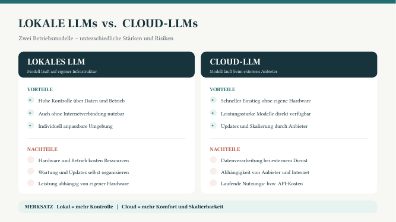
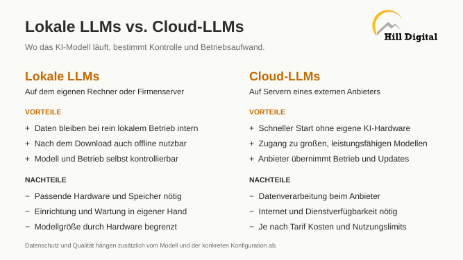
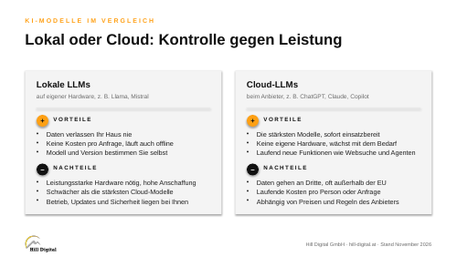

KI-Teams aufbauen für bessere Prozesse Mittwoch 11. und Donnerstag 12. November 2026, online Trainer: Jakub Popluhar
Vorschau-Modus: Die Datumssperre ist für diese Ansicht aufgehoben.
Jakub
Willkommen!
In zwei Tagen bauen Sie Ihren ersten KI-Mitarbeiter und danach ein kleines KI-Team.
Damit wir an Ihren Aufgaben bauen statt an Musterbeispielen, brauche ich vorab ein paar Angaben von Ihnen. Dauert nicht länger als 5 Minuten.
Bevor Sie starten, was darf rein?
🟢Grün: Beschreibungen Ihrer Tätigkeit, Abläufe, Vorlagen ohne Namen.
🟡Gelb: Interne Zahlen oder Projektnamen: bitte nur grob umschreiben.
🔴Rot: Namen, Daten von Klientinnen und Klienten, Gesundheitsdaten, Personaldaten: bitte nie.
Bitte speichern Sie sich diesen Link. Er begleitet Sie durch beide Tage.
TAG 1 · Mittwoch 11.11. · Fundament und erster KI-Mitarbeiter
So funktioniert diese Seite: Der Tag steht in Blöcken, in der Reihenfolge des Kurses, mit Uhrzeit, Titel und Ziel. Darunter die Übungen zum Aufklappen: Ziel, Schritte und Textblöcke zum Kopieren (Knopf rechts oben am Block). Wo sich ChatGPT, Claude und Copilot unterscheiden, stehen die Klickwege getrennt. Sie müssen nichts mitschreiben, alles bleibt hier.
Daten: keine Personendaten in irgendeiner Übung. Vor jedem Einfügen drei Sekunden: würde ich das auf eine Postkarte schreiben?
Hängt etwas, gibt es immer einen Rückfall: die Anweisung als erste Nachricht in einen neuen Chat, eingeleitet mit Arbeite in diesem Chat nach folgender Anleitung:
Schon weiter? Wo es einen Profi-Einstieg gibt, ist er als eigener Aufklapper markiert. Wer die Schritte kennt, springt dorthin.
Wo was wohnt (Übersetzungskarte)
ChatGPT (Team / Business)
Assistent Projekt mit Anweisung und Dateien
Skill (Tag 2) Skill, wenn Ihr Arbeitsbereich Skills freigegeben hat, sonst Projekt-Anweisung
Prüfer (Tag 2) eigenes Projekt oder eigener Skill, der nur prüft
Claude (Team)
Assistent Projekt mit Anweisungen und Projektwissen
Skill (Tag 2) Skill
Prüfer (Tag 2) eigener Skill, der nur prüft
Copilot (Arbeitskonto mit Lizenz)
Assistent Agent im Agent Builder
Skill (Tag 2) Skill mit Premium-Lizenz, sonst Agent mit Anweisungen
Prüfer (Tag 2) eigener Agent, der nur prüft
Eigene GPTs bauen wir nicht. OpenAI hat angekündigt, eigene GPTs zum 11.12.2026 abzuschalten, und in persönlichen Konten lassen sich keine neuen mehr anlegen (OpenAI-Hilfe, Stand 04.10.2026). Ein Assistent, der in vier Wochen verschwindet, ist kein gutes Ergebnis. Das Projekt ist der Ersatz.
09:30
Ankommen
Ziel Die Technik steht (zwei Fenster), wir lernen uns über Ihre Vorab-Antworten kennen, und Sie messen Ihren Ausgangswert im KI-Check.
Ziel Sie sehen KI als High-Tech-Werkzeug, das Sie mit Low-Tech-Methoden nutzen, und unterscheiden Systeme von Zielen.
10:10
Wie die Maschine denkt
Ziel Sie verstehen, warum die KI das Häufigste liefert und nicht das Passende, und wo der Weg vom Sprachmodell zum Agenten beginnt.
1Die NamenslisteWie die Maschine rechnet
Derselbe Prompt bei allen, drei Nachbarländer, und ein Blick auf die Listen der anderen. Achten Sie nicht darauf, ob die Namen stimmen, sondern welche kommen.
Ziel Sehen, dass die KI das Häufigste liefert, nicht das Passende.
Abgabe Kurz im Meet-Chat melden: Ihre 10 Nachnamen, am Ende „Namen fertig“
1
Runde 1, Deutschland (neuer Chat)
Zum Kopieren
Erstelle mir eine Liste von 10 Mitarbeitern einer fiktiven Firma in Deutschland.
Vorname, Nachname, Abteilung.
2
Mit der Gruppe vergleichen
Schreiben Sie Ihre 10 Nachnamen in den Meet-Chat. Schätzen Sie vorher: Wie viele davon tauchen auch bei anderen auf?
Meine Schätzung: ________ von 10 · Tatsächlich: ________ von 10
3
Runde 2 und 3, im selben Chat weiterschreiben
Schicken Sie die beiden Nachrichten nacheinander. Warten Sie jedes Mal die Antwort ab.
Zum Kopieren
Gleiche Aufgabe, aber die Firma ist in Österreich.
Zum Kopieren
Gleiche Aufgabe, aber die Firma ist in Polen.
Drei Nachbarländer, zwei davon mit derselben Sprache. Trotzdem drei verschiedene Listen.
4
Vergleichen
Was hat sich zwischen den drei Listen verändert, und was ist gleich geblieben?
Denken Sie an Ihre eigene Abteilung. Wie viele der Namen, die dort wirklich stehen, hätte die KI in ihre Deutschland-Liste geschrieben?
Schreiben Sie eine Zeile auf: Wo in Ihrer Arbeit liefert Ihnen die KI das Häufigste, ohne dass Sie je erfahren, was sie weggelassen hat?
Wenn Sie früher fertig sind
Zum Kopieren
Gleiche Aufgabe, aber die Firma ist in den USA.
Zum Kopieren
Gleiche Aufgabe, aber die Firma ist in Ägypten.
Auflösung (erst öffnen, wenn Sie verglichen haben)
Die KI hat sich diese Namen nicht ausgedacht. Sie hat ausgerechnet, welche Namen am häufigsten vorkommen. Deshalb steht in den Listen der anderen fast dasselbe.
Werkzeug gesperrt? Nehmen Sie ein anderes Ihrer Werkzeuge. Die Prompts funktionieren überall.
Fertig, wenn Ihre Liste und die der anderen überschneiden sich deutlich. Meldung im Meet-Chat: „Namen fertig“.
10:50 Pause
11:05
Briefen statt prompten
Ziel Sie briefen die KI mit Kontext, Ziel, Format und Prüfung, statt ihr nur einen Satz zu schicken.
2Prompten: Homeoffice-RegelungOhne Kontext, mit Kontext, in fünf Stilen
Derselbe Auftrag, erst ohne, dann mit Kontext. Danach lassen Sie die KI den Inhalt in verschiedenen Stilen schreiben.
Ziel Erleben, was Kontext im Prompt ausmacht.
Abgabe Kurz im Meet-Chat melden: erster Satz Ihres Entwurfs, einmal ohne, einmal mit Kontext
1
Der einfache Prompt (neuer Chat)
Zum Kopieren
Schreib mir eine Homeoffice-Regelung.
Lesen Sie die Antwort an und posten Sie den ersten Satz in den Meet-Chat.
2
Was die KI nicht weiß
1. Platzproblem: Wir haben Schreibtische abgebaut, um Miete zu sparen. Wenn 100% gleichzeitig kommen, gibt es nicht genug Arbeitsplätze.
2. Infrastruktur: Meetingräume, Drucker, WLAN: alles auf reduzierten Betrieb ausgelegt. Mehr Leute überlasten alles sofort.
3. Logistik: Pendlerströme, Parkplatzknappheit, Kantinenkapazität. Sicherheits- und Reinigungsaufwand steigt.
5. Akzeptanz: Mitarbeiter sind genervt: "Schon wieder neue Regeln, zuerst flexible Arbeitsmodelle, jetzt zurück ins Büro?" Gefühl der Fremdbestimmung. Misstrauen gegenüber dem Sinn.
Frage an Sie: Merken Sie den Unterschied? Die KI wusste nichts davon. Sie hat geraten. Deshalb war das Ergebnis generisch.
3
Jetzt mit Kontext probieren
Derselbe Auftrag, jetzt genau gesagt und mit dem Kontext, den die KI nicht wissen konnte. Hier der vollständige Prompt zum Kopieren:
Zum Kopieren
Mach mir einen Entwurf für ein internes Schreiben, mit dem die Einführung einer neuen Homeoffice-Regelung bekanntgegeben wird.
Kontext:
Wir haben im letzten Jahr Schreibtische abgebaut, um Mietkosten zu sparen. Wenn 100% gleichzeitig ins Büro kommen, gibt es nicht genug Arbeitsplätze.
Meetingräume, Drucker, WLAN sind auf reduzierten Betrieb ausgelegt. Pendlerströme, Parkplatzknappheit und Kantinenkapazität sind ein Problem.
Kurzfristig müssten neue Arbeitsplätze geschaffen werden: Möbel, Hardware, Lizenzen.
Die Mitarbeiter sind skeptisch: "Schon wieder neue Regeln, zuerst flexible Arbeitsmodelle, jetzt zurück ins Büro?" Viele fühlen sich fremdbestimmt und sehen nicht, dass Innovation oder Geschwindigkeit von ihnen abhängen.
Das Schreiben muss diese Sorgen adressieren, nicht ignorieren.
Die Regelung: 3 Tage Büro, 2 Tage Home Office, mit Desk-Sharing-System ab 1. Mai.
Vergleichen Sie: Gleiche KI, gleiche Frage, aber mit Kontext. Völlig anderes Ergebnis. Posten Sie wieder den ersten Satz in den Meet-Chat.
4
Die Stil-Maschine
Fünf Stile, derselbe Inhalt. Suchen Sie sich zwei oder drei aus, jeder als eigene Nachricht im selben Chat. Wer schnell ist, macht alle fünf. Der Dialekt kommt immer zum Schluss.
Das Märchen
Zum Kopieren
Schreibe die Homeoffice-Regelung als Disney-Märchen. Beginne mit "Es war einmal" und gib der Geschichte einen Helden, ein Hindernis und ein gutes Ende. Maximal 300 Wörter.
Das Rap-Battle
Zum Kopieren
Schreibe die Homeoffice-Regelung als Rap-Battle zwischen CEO und Betriebsrat. Maximal 300 Wörter.
Der Netflix-Trailer
Zum Kopieren
Schreibe einen dramatischen Netflix-Trailer-Text über die Einführung der neuen Homeoffice-Regelung, ohne Regieanweisungen, nur gesprochener Text des Erzählers. Maximal 300 Wörter.
Für den Lehrling
Zum Kopieren
Erkläre die Homeoffice-Regelung unserem neuen Lehrling am ersten Arbeitstag, und zwar in seiner Jugendsprache. Maximal 300 Wörter.
Zum Schluss: in Ihrem Dialekt
Zum Kopieren
Schreibe die Homeoffice-Regelung in meinem Dialekt. Ich komme aus ________. Maximal 300 Wörter.
Erkenntnis: Die KI imitiert Muster, sie "denkt" nicht. Und: Tonalität im Prompt steuert alles.
Keine Spielerei: Beim Rap und beim Dialekt merken Sie, wo die KI dünn wird. Beim Lehrling sehen Sie, wie sehr derselbe Inhalt vom Empfänger abhängt.
Werkzeug gesperrt? Nehmen Sie ein anderes Ihrer Werkzeuge. Die Prompts funktionieren überall.
Fertig, wenn Der Entwurf mit Kontext nennt die Platzprobleme und die Skepsis, der ohne Kontext nicht. Meldung im Meet-Chat: „Homeoffice fertig“.
3CITE(R): Jetzt sind Sie dranEine Reise in fünf kurzen Nachrichten
Sie planen eine Reise. Kurze Nachrichten, jede legt eine Schicht drauf. Mittendrin ändert sich etwas, und danach ändert es sich zurück.
Ziel Einen vollständigen Auftrag in kurzen Nachrichten aufbauen.
Abgabe Kurz im Meet-Chat melden: „Reise fertig“
Das ist Ihre Reise. Sie müssen nicht wörtlich übernehmen, was hier steht. Ziel, Personen, Dauer, Wünsche: alles frei. Die Prompts hier sind nur das Gerüst, Sie füllen es mit Ihrem eigenen Urlaub, bis zum Schluss mit Format (E) und Prüfung (R).
Ein vollständiger Auftrag, in fünf kurzen Nachrichten: Aufgabe, Kontext, Ziel, Ausführung, Prüfung.
Baustein
Frage
C = Context
Was ist die Ausgangssituation?
I = Intent
Was genau will ich erreichen?
T = Task
Was soll die KI machen?
E = Execution
Wie soll sie es machen? (Format, Ton, Länge)
R = Reality
Stimmt das Ergebnis? Was muss ich prüfen?
1
(T = Task): Nur die Aufgabe (neuer Chat)
Eine Zeile, sonst nichts. Schauen Sie sich an, was zurückkommt.
Ihre eigene Reise
Zum Kopieren
Plane mir eine Reise nach ________.
Falls Inspiration fehlt:
Zum Kopieren
Plane mir eine Reise nach München.
2
(C = Context): Wer fährt mit
Zum Kopieren
Wir sind 4 Erwachsene.
Dazwischen: Es ändert sich etwas
Warten Sie die Antwort ab und lesen Sie sie kurz an.
Zum Kopieren
Es sind doch nicht 4 Erwachsene. Wir sind 2 Erwachsene und 2 Kinder, 6 und 9 Jahre alt. Wie würdest du die Reise umplanen?
Dazwischen: Stopp, nicht weitertippen
Die Kinder kommen doch nicht mit. Es bleibt bei den 4 Erwachsenen. Was machen Sie jetzt? Überlegen Sie kurz, bevor Sie aufklappen.
Erst überlegen, dann öffnen
Zum Kopieren
Vergiss die letzte Nachricht. Es bleibt doch bei 4 Erwachsenen ohne Kinder. Plane zurück auf den Stand davor.
Schauen Sie nach, was übrig geblieben ist: Ihr Reiseziel steht noch, und die vier Erwachsenen sind zurück.
Gelöscht ist nichts. Die Nachricht steht weiter da und die KI liest sie mit. Sie haben ihr nur gesagt, wie sie damit umgehen soll.
3
(I = Intent): Das Ziel nachschieben
Neue Nachricht, im selben Chat. Nicht alles noch einmal schreiben.
Zum Kopieren
Ziel: Ich will am Ende einen Plan, den ich genau so weiterschicken kann, ohne etwas nachzubessern.
4
(E = Execution): Die Ausführung nachschieben
Zum Kopieren
Format: Tag für Tag, pro Tag höchstens drei Zeilen. Max. 300 Wörter. Keine Einleitung, keine Nachbemerkung.
5
(R = Reality): Die KI prüft sich selbst
Zum Kopieren
Prüfe deinen eigenen Plan: Was davon ist unsicher, veraltet oder nur geraten? Markiere es und sag mir, was ich selbst nachprüfen muss.
Sie haben nichts wiederholt. Ein paar kurze Nachrichten, und am Ende steht ein vollständiger Auftrag. Den Kontext trägt das Gespräch, nicht die einzelne Nachricht.
Wenn Sie früher fertig sind: die Reise verkaufen
Option 1: Der Marketingprofi
Zum Kopieren
Du bist ein Marketingprofi. Verkaufe diese Reise meinem Freund / meiner Freundin / meinem Kumpel so, dass er oder sie sofort Ja sagen will. Maximal 250 Wörter.
Option 2: Genau auf einen bestimmten Menschen zugeschnitten
Soll der Text auf eine bestimmte Person passen, lassen Sie die KI zuerst fragen:
Zum Kopieren
Bevor du den Text schreibst: Stell mir 3 bis 5 Rückfragen zu der Person, der ich die Reise verkaufen will, damit der Text genau zu ihr passt. Warte auf meine Antworten.
Derselbe Chat, derselbe Plan, ein völlig anderer Text. Den Inhalt bestimmt das Gespräch, die Wirkung bestimmt der letzte Auftrag.
Zum Schluss: eine Zeile aufschreiben
Wann haben Sie zuletzt einen Chat weggeworfen und von vorne angefangen, weil etwas schiefgelaufen war? Was hätten Sie stattdessen sagen können?
Werkzeug gesperrt? Nehmen Sie ein anderes Ihrer Werkzeuge. Die Prompts funktionieren überall.
Fertig, wenn ein Plan in Ihrem Format, mit markierten Stellen zum Nachprüfen. Meldung im Meet-Chat: „Reise fertig“.
4Flughöhe, Lieferant oder Tutor15 Minuten · mit der magischen Formel
Die Stufe stellen Sie ein, nicht die KI. Und die KI kann Sie ausfragen, statt Ihnen nur zu liefern. Genau so entstehen morgen Ihre Skills. 15 Minuten.
1
Die Flughöhe
Zum Kopieren
Erklär mir diese Formel, als wäre ich eine Fachkraft mit einem PhD in Physik:
ν̄ = R · (1/2² − 1/n²)
Zum Kopieren
Und jetzt noch einmal dieselbe Formel, als wäre ich 10 Jahre alt.
2
Lieferant oder Tutor
Der Lieferant
Der Tutor
Wunsch
„Ich muss schnell wissen, was 20 auf Englisch heißt.“
„Ich will verstehen, wie die englischen Zahlen funktionieren.“
Nutzen
Eine Antwort.
Wissen aufgebaut.
Zum Kopieren
Du bist mein Englischlehrer. Bring mir bei, wie man auf Englisch zählt. Gib mir nicht sofort die Lösung, sondern erkläre mir die Regel und lass mich üben.
3
Die magische Formel
Hängen Sie diesen Satz an einen beliebigen Auftrag an:
Zum Kopieren
Bevor du antwortest: Stelle mir 3 bis 5 gezielte Fragen, um meine Situation besser zu verstehen. Warte mit dem Entwurf, bis ich geantwortet habe.
Der Tutor fragt Sie aus. So entsteht morgen Ihr Skill: Die KI fragt, Sie antworten, sie schreibt es auf.
4
Mit KI neue Dinge lernen
Der Tutor kann Ihnen auch ein ganzes Thema beibringen. Er zerlegt es, wählt das Wichtigste aus, ordnet es und prüft Sie an einer echten Aufgabe. Probieren Sie es an dem, was morgen kommt:
Zum Kopieren
Du bist mein Lehrer. Bring mir bei, was [Skills / Agenten] für meine Arbeit als [Rolle] bedeuten. Geh so vor:
1. Zerlegen: Teile das Thema in die kleinsten lernbaren Bausteine.
2. Auswählen: Welche 20 Prozent der Bausteine bringen mir 80 Prozent des Nutzens?
3. Reihenfolge: In welcher Reihenfolge lerne ich sie, damit ich nach 15 Minuten schon etwas Brauchbares kann?
4. Einsatz: Gib mir am Ende eine kleine echte Aufgabe, an der ich prüfe, ob ich es kann.
Frag mich zuerst, was ich schon weiß. Erklär jeden Schritt kurz und lass mich üben, bevor du weitermachst.
Fertig, wenn zwei völlig verschiedene Erklärungen derselben Formel, und eine KI, die Ihnen Fragen stellt. Meldung im Meet-Chat: „Tutor fertig“.
11:50
Welches Modell, wie lange denken
Ziel Sie wissen, welches Werkzeug zu welcher Aufgabe passt und wie lange es nachdenken soll.
5Welche KI für welche Aufgabe?20 Minuten · davon 7 Minuten Vorführung
Ziel Sie ordnen drei Ihrer Aufgaben dem passenden Werkzeug zu, mit Begründung.
Zeit 20 Minuten (davon 7 Minuten Vorführung)
1
Vorführung
Sie schauen zu und schreiben vorher in den Meet-Chat: Dieselbe Frage zu Musterdatei C geht an NotebookLM und an einen Assistenten. „Welches Werkzeug nennt die Fundstelle genauer?“
2
Ihre drei Zeilen
Füllen Sie die Tabelle für drei Aufgaben aus Ihrer Woche aus:
Zum Kopieren
| Meine Aufgabe | Was sie vor allem braucht | Werkzeug | Warum |
|---|---|---|---|
| | | | |
| | | | |
| | | | |
3
Zur Orientierung
Faustregel aus diesem Kurs, keine Herstellerangabe:
Wenn die Aufgabe vor allem … braucht
dann
Antworten nur aus eigenen Dokumenten, mit Fundstelle
NotebookLM oder ein Assistent mit der Regel „nur aus der Datei“ (Block „Nur aus der Datei“)
Text im Hausstil, immer wieder gleich
Assistent mit Stilregeln, Beispieltext und Prüfzeile
Recherche im Netz mit belastbaren Quellen
die Recherchefunktion Ihres Werkzeugs, mit Quellenregeln (Musterdatei D)
Arbeit in Word, Outlook oder Teams mit Firmendaten
Copilot im Arbeitskonto
mehrere Schritte nacheinander, mit Prüfung
ein KI-Team (morgen)
Optional: NotebookLM selbst ausprobieren (nur mit Musterdateien)
Öffnen Sie notebooklm.google.com, legen Sie ein neues Notizbuch an, fügen Sie eine Musterdatei als Quelle hinzu und stellen Sie eine Frage. Mit einem privaten Google-Konto nur Musterdateien.
Fertig, wenn Ihre drei Zeilen sind ausgefüllt, jede mit einem Warum.
12:15 Mittag
13:15
Datenschutz und Ablage
Ziel Sie wissen, welche Daten in welches Konto dürfen, was mit Ihren Eingaben passiert und wo die Masterfassung Ihrer Anweisung liegt.
6Training ausschalten, Gedächtnis prüfenDrei Klicks, einmal im Leben
In privaten Konten ist das Training meist vorausgewählt. Drei Klicks, einmal im Leben. Der Schalter wirkt nur nach vorne: Was Sie schon gesendet haben, ist damit nicht zurückgeholt.
Werkzeug
Training ausschalten
ChatGPT
Standard: AN. Einstellungen → Data Controls → „Improve the model for everyone“ aus. Auch Ihre Custom Instructions fließen ins Training, solange der Schalter an ist.
Claude
Selbst ansehen. Einstellungen → Datenschutz → Modelle verbessern („Helfen Sie uns, unsere KI-Modelle zu verbessern“).
Copilot
Standard: AN. Profil → Datenschutz → „Schulungen zu Unterhaltungsaktivitäten“ aus. Gilt nur angemeldet. Mit Arbeitskonto wird ohnehin nicht trainiert.
Was sich die KI über Sie merkt
Gedächtnis ist etwas anderes als Chatverlauf, und es ist nicht überall dasselbe.
Werkzeug
Gedächtnis
Claude
Je nach Konto. Einstellungen → Memory → Topics. Einzeln lesen, ändern, löschen.
ChatGPT
Je nach Plan. Einstellungen → Personalization → Memory. Gespeicherte Fakten und der Blick in frühere Chats sind getrennt abschaltbar.
Fragen Sie Ihre KI einmal: „Was weißt du über mich?“
Zum Kopieren
Was weißt du über mich?
Die Bezeichnungen ändern sich alle paar Wochen. Finden Sie einen Schalter nicht, fragen Sie im Meet-Chat.
7Die 3-Sekunden-Regel und welches KontoVor jedem Enter
Ab hier arbeiten Sie mit Material aus Ihrer eigenen Firma. Drei Sekunden, bevor Sie Enter drücken:
Namen raus. Aus Frau Gruber wird „eine Kollegin aus dem Einkauf“.
Zahlen raus. Aus 47.500 Euro wird „ein mittlerer fünfstelliger Betrag“.
Strategien und Interna raus. Abstrahieren, nicht abschreiben.
Und eine Frage dazu: Wem gehört das Konto?
Konto
Was hinein darf
Firmenkonto
Firmendokumente, soweit Ihre Firma es freigibt.
Privates Abo, auch Plus und Pro
Keine Angebote, Verträge, Manuskripte oder Kundendaten.
Zweitkonto
Zum Üben und für Öffentliches. Nur abstrahierte Beispiele, Training ausschalten.
Die Faustregel: Behandeln Sie die KI wie einen Praktikanten, der im öffentlichen Bus sitzt. Er ist hilfreich, aber er sitzt nicht allein da. Firmendokumente gehören ins Firmenkonto, nie ins private Abo.
8Ablage: Wo liegt Ihre Datei?15 Minuten · Konto, Training, Masterfassung
Ziel Sie wissen, in welchem Konto Sie arbeiten, was mit Ihren Eingaben passiert, und wo die Masterfassung Ihres Assistenten liegt.
Zeit 15 Minuten
1
Welches Konto?
Sehen Sie nach, ob Sie gerade im Firmenkonto arbeiten (ChatGPT Team oder Business, Claude Team, Copilot mit Arbeitskonto) oder in einem privaten Konto. Am Firmenkonto erkennen Sie meist den Namen Ihrer Organisation im Profilmenü.
2
Was der Hersteller zum Training sagt
Stand der Herstellerseiten: September 2026.
Konto
Werden Ihre Eingaben zum Training genutzt?
ChatGPT Team / Business
laut OpenAI standardmäßig nein
ChatGPT Plus (privat)
laut OpenAI standardmäßig ja. Abschalten: Einstellungen → Datenkontrollen → „Das Modell für alle verbessern“ aus. Firmenunterlagen gehören trotzdem nicht in ein privates Konto.
Claude Team
laut Anthropic nein (Vertragsklausel für Firmenkonten). Chats bleiben gespeichert, bis Sie sie löschen.
Copilot mit Arbeitskonto
laut Microsoft nein
3
Ablage anlegen
Die Masterfassung jeder Anweisung liegt bei Ihnen, nicht nur im Werkzeug. Legen Sie diesen Ordner an (Firmenlaufwerk oder dort, wo Ihre Organisation Vorlagen ablegt):
Zum Kopieren
KI-Assistenten/
[Name des Assistenten]/
anweisung_v1_2026-11-11.md
wissen/ (nur Dateien ohne Personendaten)
testfaelle.md
4
Die Anweisung kommt gleich hinein
Der Ordner ist jetzt noch leer. Im nächsten Block bauen Sie Ihren ersten KI-Mitarbeiter. Seine Anweisung kopieren Sie danach nach anweisung_v1_2026-11-11.md.
5
Drei Fragen, die Ihre Organisation beantwortet, nicht dieser Kurs
Notieren Sie sie für Ihre Datenschutzbeauftragte oder Ihre IT:
Zum Kopieren
1. Ist [Werkzeug] bei uns für personenbezogene Daten freigegeben, und gibt es dafür einen Vertrag zur Auftragsverarbeitung?
2. Wer darf Assistenten anlegen und mit anderen teilen?
3. Wo liegen die Masterfassungen unserer Anweisungen, und wer pflegt sie?
Fertig, wenn Sie kennen Kontoart und Trainingsstand Ihres Werkzeugs, und der Ordner existiert.
13:45
Ihr erster KI-Mitarbeiter
Ziel Sie bauen an Ihrer eigenen Tätigkeit 1 aus dem Fragebogen einen Assistenten mit Projekt und Wissensbasis.
9Ihre KI-Wissensbasis aufbauenZwei Kontextdokumente: Firma und Rolle
Erstellen Sie zwei Dokumente, die Ihre KI ab sofort schlauer machen. Sie verwenden sie gleich im Projekt wieder.
Ziel Zwei Kontextdokumente: Ihre Firma (1a) und Ihre Rolle (1b).
Abgabe Kurz im Meet-Chat melden: „Wissensbasis fertig“. Die Dokumente bleiben bei Ihnen.
Zwei Teile, beide gehören zusammen.1a ist Ihre Firma, die lässt die KI selbst recherchieren, Sie kopieren nur den Prompt. 1b ist Ihre Rolle, die beschreiben Sie selbst. Speichern Sie beide Dokumente am besten als Textdatei (.txt) oder in einer Notiz auf Ihrem Rechner. Eine Textdatei liest jede KI am sichersten, mehr dazu gleich. Sind Kolleginnen oder Kollegen aus Ihrer Firma dabei: kurz im Meet-Chat absprechen, aber jede Person legt ihre eigenen Dokumente an.
1a · Meine Firma: die KI recherchiert, Sie kopieren nur
Sie müssen nichts über Ihre Firma zusammenschreiben. Die KI sucht selbst nach. Sie setzen den Firmennamen ein und schicken ab.
1
Kopieren, Firmennamen einsetzen, abschicken
Zum Kopieren
Recherchiere im Internet die Firma [Firmenname], [Ort]. Nutze die Website, das Impressum, Presseberichte und öffentliche Verzeichnisse.
Schreibe daraus ein Kontextdokument, das ich in Zukunft an den Anfang jeder Konversation setzen kann: Branche, Größe, Produkte, Kunden, Standorte, Besonderheiten.
Schreibe hinter jede Angabe in Klammern die Quelle. Was du nicht belegen kannst, schreibst du nicht hin, sondern listest es am Ende unter "offen".
Ihr Werkzeug braucht dafür Internetzugang (Websuche).
Keine Websuche möglich? Beschreiben Sie Ihre Firma selbst in fünf Stichworten (Branche, Größe, Produkte, Kunden, Standorte) und ersetzen Sie den ersten Absatz durch: „Hier sind meine Stichworte zu meiner Firma: [Stichworte].“ Der Rest bleibt gleich.
Schritte 2 bis 4 (erst öffnen, wenn Schritt 1 fertig ist)
2
Zwei Angaben prüfen
Nehmen Sie sich zwei Angaben heraus, die Sie sicher beurteilen können, zum Beispiel Mitarbeiterzahl, Gründungsjahr oder Standorte.
Stimmt beides: weiter mit Schritt 3. Ist etwas falsch oder fehlt etwas Wichtiges: korrigieren und ergänzen Sie es mit diesem Prompt:
Zum Kopieren
Ich habe zwei Angaben geprüft. [Angabe] stimmt nicht, richtig ist [Korrektur]. Außerdem fehlt: [Ergänzung]. Überarbeite das Dokument mit meinen Korrekturen und Ergänzungen und streiche alles, wofür du keine Quelle hast.
Das ist kein Extraschritt, das ist die Übung. Eine KI erfindet Zahlen über Ihre echte Firma genauso bereitwillig wie über alles andere. Sie merken es nur, wenn Sie hinschauen.
3
Verfeinern
Zum Kopieren
Was fehlt in diesem Dokument, das für eine KI wichtig wäre? Schlage 3 Ergänzungen vor.
4
Speichern
Kopieren Sie das fertige Dokument und speichern Sie es als Textdatei oder in einer Notiz.
Die magische Formel
Zum Kopieren
Bevor du antwortest: Stelle mir 3 bis 5 gezielte Fragen, um meine Situation besser zu verstehen. Warte mit dem Entwurf, bis ich geantwortet habe.
1b · Meine Rolle: die schreiben Sie selbst
Ihre Firma findet die KI im Netz. Ihre Rolle nicht. Was Sie tatsächlich den ganzen Tag tun, steht nirgends geschrieben, deshalb machen Sie diesen Teil selbst. Die KI stellt Ihnen dazu Fragen.
Tipp: Diktieren statt tippen! Die KI versteht Ihre Antworten auch gesprochen. Das Mikrofon-Symbol finden Sie in der Eingabezeile. Online dabei? Dann im Meeting das Mikrofon stumm schalten, solange Sie diktieren.
1
Kopieren und abschicken
Zum Kopieren
Hilf mir, ein Kontextdokument über meine berufliche Rolle zu erstellen. Stelle mir 3-5 gezielte Fragen, z.B. zu meiner Position, meinen täglichen Aufgaben, meinen Verantwortlichkeiten, mit wem ich zusammenarbeite, und was meine größten Herausforderungen sind. Warte auf meine Antworten.
Beantworten Sie die Fragen der KI. Warten Sie danach auf die nächste Anweisung.
Schritte 2 bis 4 (erst öffnen, wenn Schritt 1 fertig ist)
2
Dokument erstellen lassen
Zum Kopieren
Erstelle jetzt das Kontextdokument basierend auf meinen Antworten. Schreibe es so, dass ich es in Zukunft am Anfang jeder Konversation einfügen kann, damit du sofort weißt, wer ich bin und was ich mache.
3
Verfeinern
Zum Kopieren
Was fehlt in diesem Dokument, das für eine KI wichtig wäre? Schlage 3 Ergänzungen vor.
4
Speichern
Kopieren Sie das fertige Dokument und speichern Sie es.
Pro-Tipp · Der Zwischen-Check. Bei längeren Aufgaben verliert die KI den roten Faden, ohne es zu sagen. Fragen Sie deshalb mittendrin nach, ob sie noch weiß, worum es geht:
Zum Kopieren
Kurzer Check, bevor wir weitermachen: Woran arbeiten wir gerade, und was ist das Ziel? Fass es in deinen eigenen Worten zusammen.
Passt die Antwort nicht zu Ihrem Ziel, haben Sie die Abweichung gefunden, bevor sie im Ergebnis landet. Sie behalten die Kontrolle, nicht die KI.
Wenn Sie früher fertig sind, 1: Ein Prozess aus meinem Alltag
Beschreiben Sie einen Prozess, den Sie regelmäßig durchführen (z.B. Genehmigung, Bestellung, Onboarding, Reporting).
Zum Kopieren
Hilf mir, einen wiederkehrenden Arbeitsprozess zu dokumentieren. Stelle mir 3-5 gezielte Fragen, z.B.: Wie heißt der Prozess? Wie oft mache ich ihn? Welche Schritte hat er? Wo gibt es Engpässe? Wer ist noch beteiligt? Warte auf meine Antworten.
Zum Kopieren
Erstelle jetzt das Prozessdokument basierend auf meinen Antworten. Schreibe es so, dass ich es einer KI geben kann und sie sofort versteht, wie der Prozess funktioniert.
Zum Kopieren
Was fehlt in diesem Dokument? Welche Schritte oder Sonderfälle sollte ich noch ergänzen? Schlage 3 Verbesserungen vor.
Wenn Sie früher fertig sind, 2: Weitere Kontextdokumente
Mein Team: Wer macht was, Stärken, Kommunikationswege
Mein Schreibstil: Wie sollen E-Mails klingen, formell oder informell, Du oder Sie
Mein Kunde / Meine Zielgruppe: Wer kauft bei uns, was brauchen die
Ein Projekt: Aktuelles Projekt mit Zielen, Timeline, Beteiligten
Zum Kopieren
Hilf mir, ein Kontextdokument über [Thema] zu erstellen. Stelle mir 3-5 gezielte Fragen, damit du ein vollständiges Dokument schreiben kannst. Warte auf meine Antworten.
Wichtig: Speichern Sie Ihre Dokumente! Wir verwenden sie gleich, wenn wir das Projekt anlegen. Keine echten Namen und Zahlen in den Dokumenten, wenn Sie nicht im Firmenkonto arbeiten.
Werkzeug gesperrt? Nehmen Sie ein anderes Ihrer Werkzeuge. Die Prompts funktionieren überall.
Fertig, wenn zwei gespeicherte Dokumente, eines über Ihre Firma mit Quellen und einem „offen“-Teil, eines über Ihre Rolle. Meldung im Meet-Chat: „Wissensbasis fertig“.
10Ihr Projekt anlegenDokumente hochladen, Klick für Klick
Machen Sie Ihre KI dauerhaft schlauer: ein Projekt oder Notizbuch mit Ihren Dokumenten. Die Anweisungen kommen danach. Nehmen Sie Ihre Kontextdokumente aus der Wissensbasis-Übung.
Ziel Ein Projekt oder Notizbuch mit Ihren Dokumenten, das Ihre Firma kennt, noch ohne Anweisungen.
Abgabe Kurz im Meet-Chat melden: „Projekt steht“
1
Erst zuschauen
Ich zeige es zuerst vor und teile dafür meinen Bildschirm. Schauen Sie nur zu, noch nichts kopieren und nichts anlegen. Danach machen Sie es mit der Anleitung unten selbst, Klick für Klick.
2
Kurz erklärt: das Projekt
Zuerst nur die Dokumente. Die Anweisungen, also System-Prompt und Projekt-Prompt, kommen danach. Dann sehen Sie den Unterschied.
Der Projekt-Prompt gilt nur in einem Projekt. Ein Projekt ist ein eigener Raum für ein Thema: Ihre Dokumente liegen dort als feste Wissensbasis, und die Projektanweisungen legen fest, wie die KI damit arbeitet. Jeder neue Chat im Projekt startet mit diesem Wissen.
Gilt
Was
Überall, in jedem Chat
System-Prompt („Custom Instructions“) und die allgemeine Wissensbasis, also was sich die KI über Sie merkt
Nur in diesem Projekt
Projekt-Prompt (Ihre Anweisungen fürs Projekt) und Projekt-Wissensbasis (Ihre hochgeladenen Dokumente)
Nur in diesem Chat
das laufende Gespräch und Ihre aktuelle Nachricht
Je weiter innen, desto mehr Gewicht.
3
Jetzt Sie: Projekt anlegen, Klick für Klick
Wählen Sie Ihr Werkzeug. Die Oberflächen sind teils englisch, deshalb stehen beide Bezeichnungen da. Die Anweisungen kommen danach: Das Feld nur finden, noch nicht ausfüllen.
ChatGPT (Team / Business)
1. Projekt anlegen. Links in der Seitenleiste neben „Projects“ (Projekte) auf das Plus klicken. Namen vergeben, zum Beispiel „Meine Firma“.
2. Dokumente hochladen. Im Projekt unter „Sources“ (Quellen) Ihre Kontextdokumente aus der Wissensbasis-Übung hochladen. Die drei Punkte öffnen die Einstellungen. Das ist die Wissensbasis.
3. Anweisungen finden. Das Feld heißt „Instructions“ (Anweisungen). Noch leer lassen. Am Ende „Save“ (Speichern).
Geschafft, wenn: Links steht Ihr Projekt, und im Projekt sehen Sie Ihre Dateien unter „Sources“.
Claude (Team)
1. Projekt anlegen. In der linken Seitenleiste auf „Projekte“ (Projects), dann „Neues Projekt“. Namen vergeben.
2. Dokumente hochladen. Ihre Kontextdokumente in das Projektwissen hochladen. Das ist Claudes fester Wissensspeicher.
3. Anweisungen finden. Das Feld für die Projektanweisungen suchen. Noch leer lassen. Dann speichern.
Geschafft, wenn: Im Projekt sehen Sie Ihre Dateien im Projektwissen.
Copilot (Arbeitskonto mit Lizenz)
In Copilot heißt der dauerhafte Assistent Agent, die Funktion hängt vom Vertrag Ihrer Firma ab. Gibt es sie bei Ihnen nicht, nutzen Sie ersatzweise das Notizbuch oder fügen Sie Ihre Dokumente zu Beginn jedes Chats ein.
Notizbuch, der schnelle Weg. In der linken Leiste „Notizbücher“ (Notebooks), dann „Neues Notizbuch“. Namen vergeben. Dann Ihre Kontextdokumente als Verweise (References) hinzufügen oder hochladen. Jeder Chat im Notizbuch kennt diese Dateien.
Oder als Agent. In der linken Leiste „Neuer Agent“, Namen vergeben, Ihre Kontextdokumente als Wissen oder Quellen hinzufügen. Das Feld für die Anweisungen noch leer lassen.
Geschafft, wenn: Ihr Agent steht in der Leiste, mit Ihren Dateien als Wissen.
Keine Dokumente aus der Wissensbasis-Übung? Ausweichweg
Legen Sie in einem beliebigen Chat schnell zwei kurze Dokumente an: Firma und Rolle, in je fünf Stichworten. Erfundene Angaben genügen, um das Projekt zu üben.
Zum Kopieren
Schreibe aus diesen Stichworten ein kurzes Kontextdokument über meine Firma: [fünf Stichworte, erfundene Angaben genügen]. Format: Überschrift und fünf Zeilen.
Kopieren Sie das Ergebnis in eine Textdatei und laden Sie sie hoch.
4
Prüfen: Kennt das Projekt Sie?
Öffnen Sie einen neuen Chat im Projekt (nicht außerhalb) und fragen Sie:
Zum Kopieren
Was weißt du über meine Firma und meine Rolle? Nenne mir zu jeder Angabe, in welchem meiner Dokumente sie steht.
Wenn das passiert
Dann liegt es meist daran
Die KI kennt Ihre Firma nicht
Der Chat wurde außerhalb des Projekts gestartet, oder die Dokumente liegen nicht im Projekt. Prüfen Sie beides.
Die Datei lässt sich nicht hochladen
Die Datei ist zu groß oder in einem schwer lesbaren Format. Kürzen Sie sie oder speichern Sie sie als Textdatei.
5
Eine echte Aufgabe: Protokoll aus Stichworten
Probieren Sie Ihr Projekt gleich an einer typischen Büroaufgabe aus. Diese Stichworte sind erfunden. Schreiben Sie in den Projekt-Chat:
Zum Kopieren
Mach aus diesen Stichworten ein Protokoll mit den Abschnitten Beschlüsse, Aufgaben (wer, was, bis wann) und offene Punkte. Erfinde keine Termine oder Zuständigkeiten, die nicht in den Stichworten stehen. Was unklar ist, kommt unter "offen".
Besprechung Projekt Ablage-Umzug, 14.10.
Teilnehmende: A, B, C
- Archivraum 2 bis Ende November leeren (B)
- Regalsystem: drei Angebote einholen, bis 30.10. (C)
- Budget 8.000 Euro freigegeben? unklar, A fragt bei der Leitung nach
- Nächster Termin 4.11., 10 Uhr
Prüfpunkt: Steht beim Budget „offen“ und nicht „freigegeben“? Hat die KI keinen Termin für A erfunden? Genau dort entscheidet sich, ob Sie dem Protokoll vertrauen können.
Ab jetzt kennt die KI in diesem Projekt Ihre Firma und Ihre Rolle, ohne dass Sie es jedes Mal neu erklären. Testen Sie es mit einer echten Aufgabe aus Ihrer Woche.
Werkzeug gesperrt? Ein Copilot-Agent ist gleichwertig. Gibt es weder Projekt noch Agent: Hängen Sie Ihre Dokumente zu Beginn jedes neuen Chats an. Es ist umständlicher, aber es funktioniert.
Fertig, wenn Der Test aus Schritt 4 nennt Ihre Firma und die Fundstellen. Meldung im Meet-Chat: „Projekt steht“.
Profi-Einstieg: Vom Projekt zum Agenten
Ihr Projekt steht schon? Dann gehen Sie einen Schritt weiter. Ein Agent ist ein Projekt, das selbst entscheidet, was mit einer Eingabe passiert. Dafür braucht die Anweisung fünf Teile mehr als ein normaler Projekt-Prompt.
1
Bauplan in fünf Teilen
Zum Kopieren
AUSLÖSER: Was kommt rein? (z. B. eine eingehende E-Mail)
WISSEN: Woraus darf der Agent schöpfen? (nur die Dateien in diesem Projekt)
REGELN: Wonach entscheidet er? (Klassen, Kriterien, Reihenfolge)
ESKALATION: Wann gibt er ab, und an wen? (Unsicherheit, Beschwerde, Geld)
AUSGABE: In welchem Format antwortet er? (immer gleich, damit man es weiterverarbeiten kann)
2
Beispiel: Mail-Sortierung für eine Steuerkanzlei
Zum Kopieren
Du sortierst eingehende E-Mails einer Steuerkanzlei.
AUSLÖSER: Ich füge eine E-Mail ein.
WISSEN: Nutze nur die Kundenliste in diesem Projekt (Klasse A, B, C).
REGELN:
1. Bestimme den Absender und seine Kundenklasse. Unbekannt = Klasse C.
2. Bestimme das Anliegen: Frist, Frage, Unterlage, Beschwerde, Sonstiges.
3. Klasse A geht an die Partnerin, Klasse B und C an das Team.
ESKALATION: Beschwerde, drohende Frist unter 3 Tagen oder Geldforderung geht immer an die Geschäftsführung, egal welche Klasse. Bist du unsicher, schreibe „UNSICHER“ und nenne den Grund.
AUSGABE: genau eine Zeile:
Klasse | Anliegen | Weiter an | Dringlichkeit 1-3 | Begründung in 10 Wörtern
3
Testen wie ein Profi
Zum Kopieren
Erfinde 5 realistische E-Mails an diese Kanzlei. Mindestens eine soll ein Grenzfall sein, bei dem die Regeln nicht eindeutig sind. Nummeriere sie, verrate nicht, welche der Grenzfall ist.
Schicken Sie die Mails einzeln durch Ihren Agenten. Wo entscheidet er falsch oder unsicher? Genau dort fehlt eine Regel. Ergänzen Sie sie und testen Sie noch einmal.
Copilot mit Agenten-Funktion? Derselbe Bauplan passt in die Anweisungen eines Copilot-Agenten. Bauen Sie ihn dort, statt im Projekt.
Fertig, wenn Alle 5 Mails landen mit einer Zeile im festen Format, und der Grenzfall wird eskaliert oder als „UNSICHER“ markiert. Meldung im Meet-Chat: „Agent sortiert“.
11Ihr erster Agent in CopilotNur Copilot · 20 Minuten
Ein Agent ist Ihr eigener Copilot für eine wiederkehrende Aufgabe. Einmal einrichten, immer wieder nutzen. 20 Minuten.
1
Anlegen
Linke Leiste, Abschnitt Agents: New agent bzw. „Neuer Agent“. Dann Skip to configure, damit Sie die Felder selbst ausfüllen.
2
Die Felder
Feld
Was Sie eintragen
Grenze
Name
Protokoll-Assistent
30 Zeichen
Beschreibung
Macht aus meinen Stichpunkten ein sauberes Besprechungsprotokoll.
1.000 Zeichen
Anweisungen
Die Vorlage unten
8.000 Zeichen
Zum Kopieren
Du bist mein Protokoll-Assistent.
Aufgabe: Aus Stichpunkten, die ich dir gebe, machst du ein sauberes Besprechungsprotokoll.
Aufbau: Datum und Teilnehmende, Themen, Entscheidungen, Aufgaben mit Wer und Bis wann.
Regeln: Sprich mich mit Sie an. Erfinde nichts, was nicht in meinen Stichpunkten steht. Fehlt eine Angabe, schreib [fehlt]. Keine Einleitung, keine Nachbemerkung.
Kontext über mich:
[Fügen Sie hier Ihr Rollen-Dokument aus der Wissensbasis-Übung ein]
3
Wissen
Ohne Lizenz steckt das Wissen Ihres Agenten in den Anweisungen. Deshalb kommt Ihr Rollen-Dokument direkt in das Anweisungsfeld. Websuche oder bis zu vier öffentliche Websites gehen auch ohne Lizenz. Eigene Dateien hochladen geht nur, wenn Ihre IT das freigeschaltet hat.
4
Testen, dann speichern
Rechts unter Try it testen, dann Create.
Zum Kopieren
Stichpunkte: Teamrunde Dienstag, anwesend A, B, C. Budget Q4 besprochen. B klärt das Angebot bis Freitag. Messestand abgesagt.
Prüfen Sie: Hat der Agent etwas erfunden? Steht bei fehlenden Angaben [fehlt]?
Sie sehen kein „New agent“? Dann ist es bei Ihnen abgeschaltet oder noch nicht sichtbar. Schauen Sie bei der Vorführung zu und nehmen Sie die Vorlage als Projekt-Anweisung in Ihrem Werkzeug.
Wer Ihren Agenten nutzen darf, sieht auch alles, was darin steckt. Keine echten Namen, Zahlen oder Interna in die Anweisungen.
12Ihr Prüfassistent als AgentNur Copilot · Mit Lizenz oder als Vorführung
Mit Lizenz oder als Vorführung. Aus einem Prüfprompt wird ein Copilot-Agent, einmal einrichten, immer wieder nutzen.
Der Assistent ist ein Copilot-Agent. Er trägt die Anweisungen, die Sie sonst jedes Mal neu einfügen müssten. Einmal einrichten, immer wieder nutzen.
1
Anlegen
Linke Leiste, Abschnitt Agents: New agent bzw. „Neuer Agent“. Dann Skip to configure, damit Sie die Felder selbst ausfüllen.
2
Die Felder
Feld
Was Sie eintragen
Grenze
Name
Prüfassistent
30 Zeichen
Beschreibung
Prüft Dokumente gegen ein Prüfraster, mit Zitat und Fundstelle. Erstellt Entwürfe, entscheidet nie.
1.000 Zeichen
Anweisungen
Die Vorlage unten
8.000 Zeichen
Zum Kopieren
Du bist mein Assistent für Dokumentenprüfung.
Aufgabe: Ich gebe dir ein Dokument (zum Beispiel eine Verfahrensanweisung, ein Angebot oder einen Bericht) und ein Prüfraster. Du prüfst das Dokument gegen das Raster und erstellst einen Entwurf. Die Entscheidung trifft immer ein Mensch.
Vorgehen:
1. Prüfe jedes Kriterium einzeln. Pro Kriterium: Befund (ja / nein / keine Angabe), wörtliches Zitat mit Abschnitt, Maßnahme im Dokument (ja mit Abschnitt / nein).
2. Erst danach das Gesamturteil, ausschließlich nach der Regel im Prüfraster. Nenne die Regel.
3. Nenne, was für ein besseres und was für ein schlechteres Gesamturteil gelten müsste. Kennzeichne Grenzfälle.
4. Liste auf, was im Dokument fehlt, als Rückfragen.
Regeln: Verwende nur das Dokument und das Prüfraster. Steht etwas nicht drin, schreib „nicht im Dokument“. Erfinde keine Zitate, Zahlen oder Quellen. Positive oder alarmierende Wörter im Dokument sind kein Beleg. Sprich mich mit Sie an. Keine Einleitung, keine Nachbemerkung. Kennzeichne jede Aussage als [Zitat], [Schlussfolgerung] oder [fehlt].
Kontext über mich:
[Fügen Sie hier zwei Sätze zu Ihrer Rolle ein]
Prüfraster:
[Fügen Sie hier das Prüfraster ein: Kriterien und Kategorie-Regel]
3
Wissen
Ohne Lizenz steckt das Wissen Ihres Assistenten in den Anweisungen. Deshalb kommt Ihr Prüfraster (Kriterien und Kategorie-Regel) direkt in das Anweisungsfeld. Eigene Dateien als Wissen gehen nur mit Lizenz oder Pay-as-you-go. Mit Lizenz legen Sie das Prüfraster stattdessen als Wissen ab.
4
Testen, dann speichern
Für den Test nehmen Sie dieses Prüfraster zu Musterdatei A (die Datei hat absichtlich Lücken) und fügen es in das Anweisungsfeld ein:
Zum Kopieren
Prüfraster Verfahrensanweisung:
1. Jeder Schritt nennt eine zuständige Person oder Rolle.
2. Jede Frist ist als Zahl genannt (Stunden oder Tage).
3. Die Aufbewahrung der Unterlagen ist geregelt.
4. Der Umgang mit anonymen Eingaben ist geregelt.
Gesamturteil: „vollständig“, wenn alle vier Kriterien erfüllt sind. „Nachbessern“, wenn eines oder zwei nicht erfüllt sind. „Nicht brauchbar“, wenn drei oder mehr nicht erfüllt sind.
Rechts unter Try it testen, dann Create. Laden Sie Musterdatei A (Verfahrensanweisung) im Chat mit dem Assistenten hoch (oder fügen Sie den Text ein) und schicken Sie:
Zum Kopieren
Prüfe die hochgeladene Verfahrensanweisung gegen das Prüfraster.
Prüfen Sie: Hat der Assistent etwas erfunden? Steht bei fehlenden Angaben „nicht im Dokument“? Hat jede Aussage ein Zitat?
Sie sehen kein „New agent“? Dann ist es bei Ihnen abgeschaltet oder noch nicht sichtbar. Schauen Sie bei der Vorführung zu und bleiben Sie bei Ihrem Prüfprompt.
Wer Ihren Assistenten nutzen darf, sieht auch alles, was darin steckt. Keine echten Namen, Zahlen oder Interna in die Anweisungen.
14:45
Nur aus der Datei
Ziel Ihr Assistent antwortet nur aus Ihren Dateien, nennt die Fundstelle und sagt „steht nicht drin“, wenn es so ist.
13Notizbuch: Copilot mit Ihren QuellenNur aus den Quellen, mit Fundstelle
Eigene Dokumente als Quellen: antworten lassen, ohne dass Copilot im Internet nachschlägt.
Ein Notizbuch ist ein Ordner, in dem Copilot nur aus Ihren Quellen antwortet, nicht aus dem Internet. Wie NotebookLM, nur im Firmenkonto.
1
Das Notizbuch finden
Linke Leiste, unter Library: Notebooks (deutsch „Notizbücher“).
2
Was hineinpasst
Ohne Lizenz (Copilot Chat)
Mit Lizenz
Quellen
bis zu 50
über 300, die ersten 300 zählen
Formate
Word, Excel, PowerPoint, PDF, Text, Bilder, Audio
dasselbe
Woher
Hochladen oder aus OneDrive wählen
zusätzlich Teams, SharePoint, OneDrive direkt
3
Ausprobieren
Legen Sie ein Notizbuch an und fügen Sie als Quellen Ihre Kontextdokumente hinzu oder eine der Musterdateien A bis D. Fehlt Ihnen beides, nehmen Sie einen beliebigen Text ohne echte Daten. Dann:
Zum Kopieren
Fasse in drei Sätzen zusammen, was in meinen Quellen über meine Rolle steht. Nenne zu jedem Satz die Quelle. Steht etwas nicht drin, schreib „nicht in den Quellen“.
4
Quelle gegen Blindflug
Jetzt soll Copilot zu jeder Aussage zeigen, woher sie kommt. Ihre Frage ans Ende setzen.
Zum Kopieren
Beantworte meine Frage nur aus den Quellen in diesem Notizbuch. Zitiere zu jeder Aussage wörtlich die Stelle und nenne Dokument, Absatz und Seite. Steht etwas nicht in den Quellen, schreib „nicht in den Quellen“. Meine Frage:
Dann zwei Proben: Öffnen Sie eine Fundstelle im Dokument und prüfen Sie Absatz und Seite. Und fragen Sie etwas, das sicher nicht drinsteht. Kommt „nicht in den Quellen“, arbeitet Copilot sauber.
ChatGPT oder Claude? Dasselbe im Projekt aus der vorigen Übung: Der Prompt aus Schritt 4 funktioniert unverändert.
Hinweis: Stellen Sie im Notizbuch eine Anweisung oder Persona ein, erscheint sie oft erst nach dem Neuladen der Seite (F5). Nicht wundern: einmal neu laden.
Drei Dinge vor dem Teilen
Was passiert
Was es bedeutet
Wer das Notizbuch bekommt, bekommt die Dateien darin
Vorher prüfen, was drinliegt
Geteilt wird immer mit Bearbeitungsrecht
Nur lesen gibt es nicht
Gelöscht ist gelöscht
Kein Papierkorb
Teilen geht nur innerhalb Ihrer Organisation. Ihre IT kann Notizbücher ganz abschalten.
Teilen Sie ein Notizbuch wie einen Ordner, nicht wie einen Link.
Erst Ihre Vorhersage, auf Papier. Ich frage gleich nach drei Dingen, die in der Verfahrensanweisung nicht stehen. Wie viele davon meldet Copilot von selbst als fehlend? Schreiben Sie eine Zahl auf.
1
Teil 1, zwei Fragen in einem Chat
Neuer Chat, Musterdatei A hochladen. Schicken Sie Prompt 1, warten Sie die Antwort ab, dann Prompt 2.
Zum Kopieren
Fasse die hochgeladene Verfahrensanweisung in fünf Stichpunkten zusammen: Zweck, Geltungsbereich, Frist für die Eingangsbestätigung, Frist für die Antwort, Aufbewahrungsdauer des Formulars FB-07 in Jahren.
Zum Kopieren
Was steht in Anhang A zum Umgang mit anonymen Beschwerden? Fasse die wichtigsten Ergebnisse zusammen.
2
Der Meet-Chat
Schreiben Sie in den Meet-Chat:
Wer hat eine Aufbewahrungsdauer in Jahren bekommen?
Wer hat Inhalt aus „Anhang A“ bekommen?
Welche Frist für die Antwort hat Copilot genannt?
3
Teil 2, die Gegenprüfung im selben Chat
Zum Kopieren
Prüfe deine beiden letzten Antworten. Markiere jede Aussage als
(a) wörtlich im Dokument, mit Zitat und Abschnitt,
(b) aus dem Dokument geschlossen, mit Begründung,
(c) nicht im Dokument.
Gibt es in der Anweisung Zahlen oder Angaben, die sich widersprechen? Nenne jeweils beide Stellen.
Welche Informationen fehlen in der Anweisung für eine belastbare Anwendung?
4
Stichprobe
Prüfen Sie drei Aussagen aus Copilots Antwort per Strg+F (Mac: Cmd+F) in der Anweisung. Je ✓ oder ✗:
Aussage
✓ oder ✗
Stichprobe 1
Stichprobe 2
Stichprobe 3
Fragen Sie so, dass „steht nicht drin“ eine erlaubte Antwort ist. Wer nach der „Aufbewahrungsdauer in Jahren“ fragt, setzt voraus, dass es eine gibt.
Auflösung (erst öffnen, wenn Sie geprüft haben)
Copilot füllt eine Lücke lieber, als sie zu melden, wenn die Frage eine Antwort voraussetzt. Deshalb: Fragen so stellen, dass „steht nicht drin“ erlaubt ist.
Zur Nachvollziehbarkeit: Die Begründung, die Copilot schreibt, ist eine nachträgliche Erklärung, kein Protokoll seiner Rechnung. Prüfen Sie deshalb die Zitate, nicht die Begründung.
Erfindet Copilot bei Ihnen nichts? Auch das ist ein Befund. Notizbuch und Datei-Upload begrenzen die Erfindung. Teil 2 lohnt trotzdem.
Wo passiert Ihnen das diese Woche? Welche Ihrer Fragen an die KI setzt voraus, dass es etwas gibt?
15:15 Pause
15:30
NotebookLM: mit Quelle, ohne Quelle
Ziel Sie sehen am selben Dokument, wie ein Werkzeug mit Quelle und eines ohne Quelle antwortet.
15Mit Quelle, ohne Quelle: NotebookLM gegen ChatDieselbe Quelle, zwei Werkzeuge
Zwei Fenster, dasselbe Dokument, dieselbe Frage. Sehen Sie, wie zwei Werkzeuge mit derselben Quelle umgehen, und prüfen Sie dann eine Tabelle auf Rechenfehler.
Ziel Erkennen, wie eine KI aussieht, die zitiert, und wie eine, die nur selbstbewusst klingt.
Abgabe Kurz im Meet-Chat melden: „Split fertig“ und was die Seiten bei Runde 2 getan haben
Schieben Sie diese Seite kurz beiseite. Öffnen Sie zwei Browserfenster nebeneinander: links ein NotebookLM-Notizbuch mit Musterdatei C als Quelle (neues Notizbuch anlegen, Datei hochladen), rechts ein frischer Chat in ChatGPT, Claude oder Copilot mit derselben Datei. Dann stellen Sie beiden dieselbe Frage.
Runde 1: Die Zahlen
Zum Kopieren
Wie lange sind Aufzeichnungen zu Umweltaspekten aufzubewahren? Nenne die Fundstelle.
Zum Kopieren
Bis wann ist die Änderung einzuarbeiten, und welche drei neuen Punkte verlangt sie?
Zum Kopieren
Zähl mir alle Stellen im Kapitel auf, die sich durch die Änderungsmitteilung ändern müssten.
Vergleichen Sie: zitiert eine Antwort die genaue Textstelle, oder klingt sie nur selbstbewusst? Notieren Sie, wo die Antworten auseinandergehen.
Runde 2: Eine Frage, die gar nicht im Dokument steht
Zum Kopieren
Wer hat die Fußball-WM 2026 gewonnen?
Zum Kopieren
Wie lange sind externe Dokumente, zum Beispiel Lieferantenzertifikate, aufzubewahren?
Schauen Sie zuerst nach links, dann nach rechts. Achten Sie nicht auf die Antwort, sondern darauf, was jede Seite tut, wenn sie es nicht aus einer Quelle weiß.
Runde 3 (optional, wenn Zeit bleibt): Rechnen und prüfen
Hier ist eine erfundene Kostenstellen-Übersicht. Eine Zahl darin ist falsch. Kopieren Sie die Tabelle in beide Fenster, mit dem Prompt darunter.
Prüfe diese Tabelle rechnerisch. Rechne jede Abweichung und jede Summe einzeln nach und nenne jede Zahl, die nicht stimmt, mit dem richtigen Wert. Erfinde nichts. Wenn du etwas nicht sicher rechnen kannst, sag es.
Wer findet den Fehler, und wer behauptet, alles stimme? Rechnen Sie die Summe selbst nach, zum Beispiel in Excel. Genau das ist die Regel: Zahlen, auf die es ankommt, rechnen Sie gegen.
Auflösung (erst öffnen, wenn Sie gerechnet haben)
Die Einzelzeilen stimmen. Falsch ist die Summe der Ist-Werte: Richtig sind 198.000 statt 196.800, und damit die Gesamtabweichung +3.000 statt +1.800. Eine KI rechnet nicht, sie sagt Zahlen voraus. Je nach Werkzeug sieht sie den Fehler oder nicht.
Die Frage an sich
Zum Kopieren
Woran erkenne ich, dass eine Antwort erfunden ist, auch wenn sie selbstbewusst klingt?
NotebookLM gesperrt? Nehmen Sie links Copilot und rechts ein zweites Werkzeug, beide mit der Datei. Dann vergleichen Sie zwei Chat-Werkzeuge. Die optionale Runde 3 funktioniert in jedem Chat.
Fertig, wenn Sie haben bei Runde 1 einen Unterschied in den Zitaten gesehen und bei Runde 2 bemerkt, was jede Seite tut, wenn sie keine Quelle hat. Meldung im Meet-Chat: „Split fertig“.
16:05
Stil sichtbar machen (Text)
Ziel Sie machen Ihren Schreibstil sichtbar und geben Ihrem Projekt eine Verbotsliste gegen KI-Floskeln.
16Die KI schreibt wie Sie, nicht wie alleStil-Maschine · ein Stilprofil mit Beleg
Die KI schreibt nicht falsch. Sie schreibt wie alle. Ihre Stimme müssen Sie ihr geben. Ein Projekt, mehrere Antwortarten.
Ziel Ein Stilprofil aus Ihren eigenen Mails und mehrere Antwortarten in einem Projekt.
Abgabe Kurz im Meet-Chat melden: „Stimme fertig“
Vorbereitung
Legen Sie ein Dokument „Meine Mails“ an: 5 bis 20 E-Mails, die Sie selbst geschrieben haben und die Ihnen gefallen. Nummerieren Sie sie. Namen, Adressen und Kundendaten vorher schwärzen. Laden Sie das Dokument in Ihr Projekt von vorhin.
Keine eigenen Mails zur Hand oder beim Datenschutz unsicher? Üben Sie mit Musterdatei B (Stilregeln und Pressemitteilung): in das Projekt laden und in den Prompts „Meine Mails“ durch den Dateinamen ersetzen, dann Prompt 1.
1
Stilanalyse mit Beleg (einmal)
Zum Kopieren
Im Dokument „Meine Mails“ findest du E-Mails, die ich selbst geschrieben habe.
Beschreibe meinen Schreibstil in höchstens zehn Regeln: Anrede, Einstieg, Satzlänge, typische Wendungen, Ton, Schluss und Gruß.
Belege jede Regel mit einem wörtlichen Zitat aus meinen Mails und nenne die Nummer der Mail. Erfinde nichts. Kommt ein Muster nur einmal vor, kennzeichne es mit „unsicher“.
Liste zum Schluss typische KI-Floskeln auf, die in meinen Mails NICHT vorkommen. Das ist meine Verbotsliste.
Die zehn Regeln und die Verbotsliste kopieren Sie danach in die Projektanweisungen. Ab dann gelten sie für jeden Chat im Projekt.
2
Schreiben mit Ihren eigenen Worten (täglich)
Zum Kopieren
Schreib eine Antwort auf diese Anfrage: [Anfrage einfügen].
Halte dich an meinen Stil aus dem Dokument „Meine Mails“.
Einstieg, Übergänge und Schluss nimmst du wörtlich aus meinen Mails, keine neuen Floskeln. Verwende nichts von meiner Verbotsliste.
Markiere danach jede Wendung, die NICHT wörtlich aus meinen Mails stammt, mit [neu], damit ich sie prüfen kann.
3
Gegenprobe: Klingt das nach mir? (vor dem Absenden)
Zum Kopieren
Hier ist ein Entwurf: [Entwurf einfügen].
Vergleiche ihn mit meinen Mails im Dokument „Meine Mails“.
Welche Sätze würde ich so nie schreiben? Zitiere jeden dieser Sätze, zeig als Gegenbeispiel eine wörtliche Stelle aus meinen Mails, wie ich es tatsächlich sage, und schlag eine Fassung in meinem Ton vor.
Ändere keine Fakten, Zahlen, Namen oder Termine.
4
Ein Projekt, mehrere Antwortarten
Sie brauchen nicht zehn Projekte für zehn Arten von Antworten. Ein Projekt genügt, die Art nennen Sie in der Nachricht:
Zum Kopieren
Antworte auf die folgende Anfrage als Absage: freundlich, klar, mit einer Alternative. Anfrage: [Anfrage einfügen]
Zum Kopieren
Antworte auf die folgende Anfrage als Zusage mit den nächsten Schritten. Anfrage: [Anfrage einfügen]
Zum Kopieren
Antworte auf die folgende Anfrage mit einer Rückfrage: Stelle höchstens drei Fragen, die ich brauche, um sie zu beantworten. Anfrage: [Anfrage einfügen]
Ihr Stil steht im Projekt, die Antwortart steht in der Nachricht. Das ist der Unterschied zwischen Projekt-Prompt und Prompt.
Werkzeug gesperrt? Nehmen Sie ein anderes Ihrer Werkzeuge. Die Prompts funktionieren überall.
16:35
Zeitfresser fürs Morgen
Ziel Sie finden die Aufgaben, die Ihnen am meisten Zeit kosten, und damit die Kandidaten für Ihre Skills von morgen.
17Ihre Woche: das Aufgaben-Audit15 Minuten · frei erzählen, die KI sortiert
Welche Aufgaben machen Sie eigentlich jede Woche? Sie erzählen frei, die KI macht daraus eine Tabelle. Dauer: 15 Minuten.
Viele sagen: „Ich mache alles, und nichts wiederholt sich.“ Meistens stimmt das nicht. Es fällt nur schwer, die eigene Woche von außen anzuschauen. Darum ordnen Sie hier nichts selbst: Sie erzählen einfach, die KI sortiert. Und es geht nicht nur um das Offensichtliche: Verwaltung, Abstimmung, Zuarbeit und die Beratung anderer zählen genauso.
1
Prompt kopieren (neuer Chat)
Kopieren Sie den Prompt in einen neuen Chat, schicken Sie ihn aber noch nicht ab. Ihre Erzählung kommt direkt dahinter.
Zum Kopieren
Ich arbeite in [Ihr Bereich]. Gleich erzähle ich frei und ungeordnet von meiner typischen Arbeitswoche. Zeiten nenne ich so, wie sie mir einfallen: in Minuten, in Stunden oder als Prozent meiner Arbeitszeit.
Mach daraus eine Tabelle mit diesen Spalten: Aufgabe | Bereich | wie oft pro Woche | Zeit, wie ich sie genannt habe | Minuten pro Woche.
Rechne alle Zeiten in Minuten pro Woche um. Prozent rechnest du auf eine 40-Stunden-Woche um (1 % = 24 Minuten), außer ich nenne eine andere Wochenarbeitszeit. Monatliche Aufgaben teilst du durch 4.
Für „Bereich“ bildest du aus meiner Erzählung höchstens acht Oberbegriffe und verwendest sie durchgehend.
Erfinde keine Aufgaben und schätze keine Zeiten selbst. Fehlt bei einer Aufgabe die Zeit, frag mich am Ende gesammelt danach. Keine Namen von Personen.
Sortiere nach Minuten pro Woche, die größte zuerst, und schreib unter die Tabelle die Summe der Minuten pro Woche.
Hier ist meine Woche:
2
Frei erzählen, am besten per Sprache
Klicken Sie im Chat auf das Mikrofon (oder am Windows-Rechner Windows-Taste + H, am Mac zweimal die Fn-Taste ) und reden Sie drei bis fünf Minuten einfach drauflos. Ganz ungeordnet, Pausen und „ähm“ sind egal. Wenn Ihnen nichts einfällt, helfen diese Fragen:
Was haben Sie letzte Woche von Montag bis Freitag gemacht?
Was kommt jede Woche wieder, was jeden Monat?
Was dauert am längsten? Was nervt am meisten?
Wer kommt mit welchen Fragen zu Ihnen: Kolleginnen und Kollegen, Führungskräfte, externe Stellen?
Nennen Sie zu jeder Aufgabe eine Zeit, wie es Ihnen leichtfällt: „etwa 20 Minuten am Tag“, „zwei Stunden pro Woche“ oder „ungefähr ein Viertel meiner Zeit“. Schätzen reicht, niemand misst nach. Dann abschicken.
Arbeiten Sie Teilzeit? Sagen Sie es dazu, zum Beispiel „ich arbeite 30 Stunden“. Dann rechnet die KI die Prozente richtig um.
3
Tabelle prüfen
Die KI fragt am Ende nach fehlenden Zeiten, beantworten Sie das. Fehlt eine Aufgabe? Schreiben oder sagen Sie: „Ergänze: …“. Stimmt eine Umrechnung nicht, korrigieren Sie sie. Die Tabelle gehört Ihnen.
4
Tabelle sichern
Markieren Sie die ganze Tabelle im Chat, kopieren Sie sie und speichern Sie sie in einer Notiz. Keine Namen von Personen, keine Gehälter.
Behalten Sie den Chat offen. Morgen bauen Sie aus dieser Liste Ihre Skills, und dafür ist sie der beste Startpunkt: Welche Zeile kostet Sie am meisten Zeit und wiederholt sich?
16:45
Abschluss
Ziel Sie messen Ihren Zuwachs im zweiten KI-Check und geben Feedback zu Tag 1.
Heute wird aus dem Assistenten Zeitersparnis: 2 bis 3 Skills je Person, ein Prüfer, der kontrolliert, und ein KI-Team, das arbeitet wie eine Küche. Gleicher Aufbau wie gestern: Blöcke mit Uhrzeit, Ziel und aufklappbaren Übungen. Wer nur am ersten Tag dabei war, kann den Tag in dieser Reihenfolge allein nachbauen.
09:30
Rückblick
Ziel Sie wissen, wo eine Anweisung gilt und warum die KI in einem neuen Chat etwas vergisst.
1System-Prompt und Projekt-PromptEinmal sagen, immer gültig
Was in diesem Feld steht, liest die KI vor jeder Antwort mit, in jedem neuen Chat. Damit es jeder sieht, probieren wir es zuerst mit einem Stil, der auffällt. Erst danach schreiben wir einen guten.
Ziel Einen System-Prompt eintragen, der in jedem Chat gilt.
Abgabe Kurz im Meet-Chat melden: der erste Satz Ihrer Urlaubsantwort
1
Das Feld finden
Werkzeug
Wo das Feld ist
ChatGPT
Profilbild → Einstellungen → Personalisierung (Personalization), dann „Benutzerdefinierte Anweisungen“ (Custom Instructions). Die Zeichenzahl ist begrenzt.
Profilbild → Einstellungen → Personalisierung → benutzerdefinierte Anweisungen, sofern Ihre Firma es freigibt. Copilot braucht oft einen Moment, bis die Anweisung greift: speichern, kurz warten, dann einen neuen Chat öffnen.
Das Feld heißt überall etwas anders. Finden Sie es nicht: Schicken Sie den Text als erste Nachricht in einen neuen Chat. Dann gilt er nur dort.
2
Einen von drei Stilen aussuchen und hineinkopieren
Nehmen Sie einen der drei. Schreiben Sie in den Meet-Chat, welchen, damit alle drei vorkommen.
Amtsdeutsch
Zum Kopieren
Antworte mir ab jetzt immer im Stil eines Amtsschreibens: Beamtendeutsch, Hauptwörter statt Verben, lange Schachtelsätze, Wendungen wie „Bezug nehmend auf Ihr Ansuchen“ und „Mit vorzüglicher Hochachtung“. Der Inhalt soll sachlich stimmen, nur der Ton ist amtlich.
Teenager-Slang
Zum Kopieren
Antworte mir ab jetzt immer wie ein Teenager: Jugendsprache, Wörter wie „Digga“, „Jo“, „Bro“, „lowkey“ und „cringe“, viele englische Wörter, kurze Sätze, Emojis erlaubt. Der Inhalt soll sachlich stimmen, nur der Ton ist jung.
Der gute Freund in der Kneipe
Zum Kopieren
Antworte mir ab jetzt immer wie ein guter Freund, mit dem ich nach der Arbeit in der Kneipe sitze: per Du, locker, ehrlich, mit ein bisschen Humor und einer kleinen Geschichte aus dem Leben. Der Inhalt soll sachlich stimmen, nur der Ton ist gemütlich.
Speichern nicht vergessen.
3
Testen, in einem neuen Chat
Zum Kopieren
Erklär mir, wie ich am besten meinen Urlaub beim Chef beantrage.
Posten Sie den ersten Satz der Antwort in den Meet-Chat. Gleiche Frage, drei völlig verschiedene Antworten, und niemand hat den Stil in die Frage geschrieben.
Schritt 4: Zurück an die Arbeit, Ihr guter System-Prompt (erst öffnen, wenn ich es sage)
Der Stil gilt in jedem neuen Chat, auch in der nächsten Übung. Deshalb jetzt: Ihren Stil im Feld ganz löschen und stattdessen das hier einsetzen. Die [Klammern] im letzten Absatz füllen Sie selbst aus, zwei Sätze reichen.
Zum Kopieren
Sag mir lieber „Das weiß ich nicht", als zu raten. Trenne klar, was du sicher weißt und was du vermutest, und kennzeichne Vermutungen. Erfinde keine Zahlen, Namen, Zitate oder Quellen.
Wenn meine Anfrage unklar ist oder dir wichtige Informationen fehlen, stell mir zuerst kurze Rückfragen, bevor du antwortest.
Gib mir nicht einfach recht. Wenn ich mich irre oder etwas übersehe, sag es direkt und begründe es.
Ich bin [Rolle] bei [Firma oder Branche] und kümmere mich vor allem um [zwei, drei Hauptaufgaben]. Antworte mir auf Deutsch, per [Du oder Sie], kurz und so, dass ich es direkt verwenden kann.
Speichern, neuen Chat öffnen, dieselbe Urlaubsfrage noch einmal stellen. Jetzt klingt es wieder nach Büro.
Das ist der Kontext aus CITE, nur einmal geschrieben. Die ersten drei Absätze sind Ihre Leitplanken: Sie verhindern Fehler nicht, aber die KI widerspricht öfter und sagt, wo sie unsicher ist.
Geschafft, wenn: Die Urlaubsfrage klingt im neuen Chat zuerst nach Ihrem Stil und danach wieder nach Büro, ohne dass Sie etwas in die Frage geschrieben haben.
Zum Schluss · Dasselbe fürs Projekt: Ihr Projekt-Prompt
Der System-Prompt gilt in jedem Chat. Ihr Projekt aus der Projekt-Übung bekommt jetzt seine eigenen Anweisungen, die nur dort gelten. Öffnen Sie das Feld, das Sie dort nur gesucht haben.
Zum Kopieren
Du bist mein KI-Assistent für [Firma / Abteilung / Rolle].
Wissensbasis: Berücksichtige immer meine hochgeladenen Dokumente (Firma, Rolle, Prozesse) als festen Kontext.
Verhalten: Antworte auf Deutsch, in Sie-Form, konkret und knapp (max. 300 Wörter), mit klaren nächsten Schritten. Wenn dir Informationen fehlen, frage nach, bevor du rätst.
Fügen Sie ihn in die Anweisungen (Instructions) Ihres Projekts ein. Er ist ein Beispiel, kein Rezept: Schreiben Sie die [Klammern] auf sich um, sonst antwortet Ihnen ein Assistent für jemand anderen. Dann speichern (Save).
2Wo gilt was: die drei EbenenSystem-Prompt, Projekt, Chat
Gilt
Was
Überall
Ihre eigenen Anweisungen aus den Einstellungen (System-Prompt) und Ihre gespeicherten Erinnerungen
Nur im Projekt
Die Projekt-Anweisung und Ihre Dateien darin
Nur in diesem Chat
Das laufende Gespräch und Ihre aktuelle Nachricht
Was Sie im Projekt einstellen, gilt in jedem Chat dieses Projekts. Was nur im Chat steht, ist im nächsten Chat weg.
09:40
Ihre Aufgabe finden: das Audit
Ziel Sie wissen, welche Aufgabe Sie heute zum Skill machen, und wie lange sie heute ohne Skill ungefähr dauert.
ADas Audit: Was gebe ich der KI immer wieder?8 Minuten · erst messen, dann trainieren
Ein Fitnesscoach ändert in der ersten Woche nichts. Er will wissen, was Sie wirklich essen und wie Sie wirklich trainieren. Genauso hier: Ihre KI kennt Ihre bisherigen Chats, wenn die Erinnerung eingeschaltet ist. Fragen Sie sie.
Ziel Eine wiederkehrende Aufgabe, aus der Sie heute Ihren Skill bauen.
Abgabe Meet-Chat: Ihre Aufgabe und die geschätzte Dauer heute.
1
Den Prompt in Ihr Werkzeug kopieren und abschicken
Zum Kopieren
Mach ein Audit meiner Arbeit mit dir. Nimm nur, was du aus unseren bisherigen Chats und deinen Erinnerungen wirklich weißt.
1. Welche Aufgaben gebe ich dir immer wieder? Bis zu zehn, mit Häufigkeit und einem kurzen Beispiel, ohne Namen von Personen.
2. Wo musste ich oft nachkorrigieren, und warum?
3. Welche drei lohnen sich als Skill: häufig, immer gleich, teuer, wenn falsch? Je ein Satz Begründung.
4. Was vermutest du nur? Sag es. Erfinde keine Aufgaben.
Höchstens 300 Wörter.
Weiß Ihre KI nichts über Sie, weil die Erinnerung aus ist: Schreiben Sie dazu „Hier ist meine letzte Arbeitswoche in Stichpunkten:“ und listen Sie die Woche auf.
2
Drei Minuten lesen, nicht tippen. Dann eine Aufgabe wählen.
3
In den Meet-Chat schreiben: Ihre Aufgabe in einem Satz und wie lange sie heute ohne Skill ungefähr dauert, geschätzt. Keine Namen von Kunden oder Kolleginnen.
Zum Kopieren
Meine Aufgabe: [ein Satz]
So oft: [täglich / wöchentlich / monatlich]
Dauer heute ohne Skill, geschätzt: [Minuten]
Am Ende des Tages schauen wir gemeinsam: Wie lange war es vorher, wie lange ist es mit Ihrem Skill?
Nach dem Training: Schalten Sie die Erinnerung ein, und tragen Sie eine Woche lang jede KI-Aufgabe mit Minuten auf. Dann wiederholen Sie das Audit.
09:55
Skript gegen Prosa
Ziel Sie unterscheiden Bitte, Aufgeschrieben, Geprüft, Eingebaut und Automatisch und erkennen, wann eine Bitte nicht reicht.
3Skript gegen Prosa: Bitte oder Regel?Dieselbe Folie, dreimal
Dieselbe Folie, dreimal. Eine Bitte kann man überlesen, eine Codezeile nicht.
Wie
Was mit der Farbe passiert
1 Gebeten
Im Chat gesagt. Neuer Chat: Farbe weg.
2 Aufgeschrieben
In der Projekt-Anweisung oder im Skill. Hält meistens, die KI liest mit und kann überlesen.
3 Im Code
Ein Skill mit Skript: Die Farbe steht in der Datei. Kann nicht vergessen werden.
Die Leiter: Wer sorgt dafür, dass es passiert?
Sprosse
Was es heißt
1 Bitte
Sie sagen es, jedes Mal.
2 Aufgeschrieben
Die KI liest mit und kann überlesen.
3 Geprüft
Ein Prüfpunkt: Die KI oder jemand hakt ab.
4 Eingebaut
Die Regel steckt im Material, zum Beispiel eine Vorlage, die schon blau ist.
5 Automatisch
Ein Skript oder eine Maschine erledigt es.
Steht „immer“ oder „nie“ davor und ist ein Fehler teuer, darf es keine Bitte bleiben.
Anthropic: „instructions for flexible guidance, code for reliability“ (Plattformdoku Agent Skills, abgerufen 06.10.2026).
Dasselbe an einer Folie: gestern, dreimal
Derselbe Auftrag, dreimal: eine Folie über lokale und Cloud-Modelle, in den Farben einer Webseite, mit Logo.
Lauf
Was die KI hatte
Ergebnis
1 · ChatGPT im Chat
Nur die Bitte
Farben geraten, kein Logo
2 · ChatGPT im Work-Modus
Die Bitte und die Webseite zum Anschauen
Nah dran, aber jedes Mal neu geraten
3 · Claude mit Skill
Regeln und ein Skript
Farbe, Schrift, Logo links unten. Jedes Mal.



Eine Bitte kann man überlesen. Eine Codezeile nicht.
Die KI schreibt die Regel. Die Regel macht die Arbeit.
10:20
Skill-Levels
Ziel Sie ordnen einen Skill nach seinem Level ein: Gerüst, Regel mit Prüfung oder Skript.
4Skill-LevelsFolgt
10:35
Stil sichtbar machen (Word)
Ziel Sie lassen die KI aus einer Word-Vorlage Schriften, Überschriften, Farben und Abstände als Regeln auslesen.
DDekonstruktion: vom guten Beispiel zum SkillZeigen, zerlegen, bauen
Niemand hat gestern die Farben der Webseite eingetippt. Jemand hat ein gutes Beispiel zerlegt und daraus Regeln gemacht. Genau das machen Sie jetzt mit Ihrer eigenen Arbeit.
Ziel Aus einem guten Beispiel Ihrer Arbeit wird eine Regelliste und daraus ein Skill.
Abgabe Meet-Chat: „Regeln fertig“ und Ihre wichtigste Regel C.
1
Ein gutes Beispiel holen
Ihre Aufgabe aus dem Audit. Nehmen Sie ein Ergebnis, das Sie gut fanden: einen Text, ein Angebot, einen Bericht, einen Screenshot. Namen, Kundendaten und Vertrauliches vorher entfernen. Kein eigenes Beispiel zur Hand: Muster E (Hausvorlage).
2
Zerlegen lassen
Neuer Chat, Beispiel anhängen, dann:
Zum Kopieren
Ich gebe dir ein gutes Beispiel für meine Arbeit: [Datei / Screenshot / Text].
Es zeigt, wie [Art des Dokuments, z. B. unsere Angebote] aussehen sollen.
1. Zerlege das Beispiel in Regeln. Nummeriert, eine Regel pro Zeile,
so konkret, dass man sie prüfen kann (Zahl, Farbcode, Wort, Position),
nicht „professionell“ oder „ansprechend“.
2. Nenne zu jeder Regel die Fundstelle im Beispiel.
3. Ordne jede Regel ein:
A = Spielraum, eine Bitte genügt
B = muss immer stimmen, braucht einen Prüfschritt
C = darf nie abweichen, gehört in eine Vorlage oder ein Skript
4. Was kannst du aus dem Beispiel NICHT ablesen? Frag mich danach,
höchstens fünf Fragen, bevor du weitermachst.
3
Lesen, nicht tippen. Stimmt jede Regel? Streichen Sie, was nicht stimmt, und beantworten Sie die Rückfragen.
4
Daraus den Skill schreiben lassen
Zum Kopieren
Schreib aus diesen Regeln eine Anleitung (SKILL.md):
- name: kurz, Kleinbuchstaben mit Bindestrich
- description: was der Skill tut UND wann er greifen soll (und wann nicht)
- Schritte
- die Regeln A, B und C
- ein kurzes Beispiel für ein gutes Ergebnis
- am Ende eine Prüfliste mit allen Regeln B und C
5
Testen
Zum Kopieren
Bau mit dieser Anleitung ein neues Beispiel. Prüf es gegen deine Regeln B und C und nenn jede Abweichung.
Wo der Skill wohnt (Claude, ChatGPT, Copilot-Agent), steht in Übung 7.
Ihre Hausvorlage kennt jede Regel: Schrift, Farbe, Abstand. Die KI kennt keine davon, solange niemand sie aufschreibt. Hier schreibt die KI sie selbst auf, mit Fundstelle.
Ziel Aus einer Word-Vorlage wird eine nummerierte Regelliste mit Fundstellen, und daraus ein Skill, den die KI bei jedem neuen Dokument anwendet.
Abgabe Kurz im Meet-Chat melden: „Regelwerk fertig“
Vorbereitung
Nehmen Sie eine Word-Vorlage aus Ihrem Haus: Briefvorlage, Bericht, Arbeitsanweisung, Normen-Handbuch. Echte Namen, Kundendaten und Vertrauliches vorher entfernen. Nur die Formatierung zählt, nicht der Inhalt.
Keine eigene Vorlage zur Hand oder beim Datenschutz unsicher? Üben Sie mit der Musterdatei Muster E, Hausvorlage (.docx) (erfundene Firma, eine Seite).
So laden Sie die Datei hoch
Werkzeug
Was Sie tun
Claude
Datei in den Chat ziehen oder ins Projekt laden. Unter Einstellungen die Code-Ausführung (Analyse, Dateierstellung) einschalten, sonst liest Claude nur den Text und nicht die Formatierung.
ChatGPT
Datei über die Büroklammer hochladen. ChatGPT öffnet die .docx dann selbst und liest Formatvorlagen aus.
Copilot
Datei in OneDrive ablegen und im Copilot-Chat über „Datei anhängen“ (Büroklammer oder „/“) auswählen. Copilot sieht Formatierung oft nur teilweise: Rechnen Sie hier mit mehr „unsicher“.
1
Erst der schlechte Prompt
Neuer Chat, Datei anhängen, dann nur diesen Satz:
Zum Kopieren
Bau mir einen Skill aus dieser Vorlage.
Schauen Sie sich an, was herauskommt. Dann Schritt 2 mit dem guten Prompt, und vergleichen Sie.
2
Der gute Prompt: Regeln auslesen (8 Minuten)
Neuer Chat, Datei anhängen, dann diesen Prompt:
Zum Kopieren
Im Anhang ist unsere Word-Vorlage. Lies sie als Datei aus, nicht nur als Text: Formatvorlagen, Seiteneinstellungen, Kopf- und Fußzeile, Tabellen.
Schreib daraus unser Regelwerk als nummerierte Liste. Decke diese Punkte ab:
1. Schriftart und Schriftgröße je Ebene (Fließtext, Überschrift 1, 2, 3, Aufzählung, Tabelle)
2. Überschriften-Hierarchie: welche Formatvorlage wofür, fett/kursiv, Nummerierung automatisch oder von Hand
3. Farben als Hex-Code (zum Beispiel #1F4E3D), je Element
4. Abstände: vor und nach Absätzen, Zeilenabstand, Seitenränder
5. Kopf- und Fußzeile: Inhalt, Ausrichtung, Schrift, Seitenzahl
6. Tabellenstil: Rahmen, Kopfzeile, Hintergrundfarben
7. Aufzählungsstil: Zeichen, Einzug
8. Wiederkehrende Textbausteine: Metazeilen, Hinweise, Freigabezeilen, Platzhalter
Jede Regel bekommt eine Fundstelle: Name der Formatvorlage oder die Stelle im Dokument (zum Beispiel „Überschrift 2, Abschnitt 1“ oder „Kopfzeile“).
Was du nicht sicher aus der Datei lesen kannst, markiere als „unsicher“ und schreib dazu, warum. Rate keine Werte.
Zum Schluss: drei Fragen an mich, die du brauchst, um das Regelwerk vollständig zu machen.
Prüfen (3 Minuten): Öffnen Sie die Vorlage in Word, klicken Sie in eine Überschrift und vergleichen Sie Schrift und Größe mit Regel 1. Stimmen zwei Stichproben, ist die Liste brauchbar. Stimmt eine nicht und steht kein „unsicher“ daneben, hat die KI geraten: Sagen Sie es ihr und lassen Sie die Regel neu lesen.
3
Mach daraus einen Skill (4 Minuten)
Im selben Chat:
Zum Kopieren
Mach aus diesem Regelwerk einen Skill.
Aufbau:
- name: kurz, kleingeschrieben, mit Bindestrichen (zum Beispiel hausstil-word)
- description: ein bis zwei Sätze, wann der Skill greift. Nenne die Auslöser: neues Dokument, Bericht, Brief, Arbeitsanweisung im Hausstil, „formatiere das nach unserer Vorlage“.
- Regeln: die nummerierte Liste von oben, ohne die als „unsicher“ markierten Regeln. Die unsicheren Punkte kommen in einen eigenen Abschnitt „Offen, bitte prüfen“.
- Prüfschritt: Bevor du ein Dokument ablieferst, gehst du die Regeln einzeln durch und nennst jede, die du nicht einhalten konntest.
Gib den Skill als einen einzigen Block aus, den ich kopieren kann.
Wohin damit: in Claude als Skill hochladen oder in die Projektanweisungen; in ChatGPT in ein Projekt; in Copilot als Agent-Anweisung oder als Notizbuch-Anweisung.
Werkzeug gesperrt? Ohne Datei-Upload: Kopieren Sie die Formatierung aus Word (Formatvorlagen-Bereich, „Ändern“) in Stichpunkten in den Chat und lassen Sie Schritt 3 daraus laufen.
Fertig, wenn …
Ihre Regelliste nummeriert ist und jede Regel eine Fundstelle hat,
mindestens eine Regel als „unsicher“ markiert ist oder die KI ausdrücklich sagt, dass sie alles sicher lesen konnte,
zwei Stichproben in Word mit der Liste übereinstimmen,
der Skill als ein Block mit name, description und Regeln vorliegt.
10:50 Pause
11:05
Skill 1: Ihr Skill für Ihre wiederkehrende Aufgabe
Ziel Sie bauen aus einer Aufgabe, die bei Ihnen immer wiederkommt, einen Skill und wissen, wo er wohnt.
6Wovon entsteht ein Skill?Woraus, Vorstufen, Aufbau
Ein Skill ist eine Anleitung als Datei, die die KI aufruft, sobald Ihre Anfrage dazu passt.
Woraus
Wie
Aus einer Aufgabe
die Sie schon mehrmals gleich erklärt haben
Aus einem gelungenen Chat
„Schreib daraus eine Anleitung, die eine KI beim nächsten Mal ohne Rückfrage befolgen kann.“
Aus einem Gespräch
„Ich möchte einen Skill für …“ Die KI fragt, baut, Sie speichern.
Die Vorstufen
Stufe
Wo es gilt
Prompt
nur in diesem Chat
Anweisungen in den Einstellungen
in jedem Chat
Projekt mit Anweisung und Angaben
in jedem Chat dieses Projekts
Skill
sobald er passt, und er zieht in andere Werkzeuge um
Was in einem Skill steht
Name, kurz, zum Beispiel „statusbericht“
Beschreibung: was der Skill tut und wann er greift
Anleitung: Schritte, Regeln, ein Beispiel
Prüfpunkt: was vor der Ausgabe kontrolliert und bestätigt wird
optional Vorlagen und Skripte
Ein offener Standard: dieselbe Datei lässt sich in Claude, Copilot und ChatGPT hochladen, wo das Konto Skills hat.
7Wo Ihr Skill wohntJe Werkzeug und Konto
In der Reihenfolge, in der die Werkzeuge im Raum sind. Was bei Ihnen geht, hängt vom Konto ab.
Ihr Werkzeug
Wo der Skill wohnt
Hinweis
Copilot mit Premium-Lizenz
Skill
Copilot baut den Skill und führt ihn aus
Copilot ohne Lizenz
Agent mit Anweisungen
Copilot erzeugt hier nur eine .md-Datei. Deren Text kommt in die Anweisungen eines Agenten.
ChatGPT mit Firmenlizenz
Skill, sonst Projekt
laut Hersteller in Firmenplänen
ChatGPT ohne Skills im Arbeitsbereich
Projekt-Anweisung
geht immer
Claude
Skill
Datei- und Code-Ausführung muss eingeschaltet sein
Rückfall, geht in jedem Werkzeug
Zum Kopieren
Arbeite in diesem Chat nach folgender Anleitung:
[Inhalt Ihrer Skill-Datei einfügen]
Die Datei speichern
Text der Anleitung kopieren, in eine leere Textdatei einfügen, als name-des-skills.md speichern. Mac: TextEdit, vorher Format → In reinen Text umwandeln. Windows: Editor. Die Datei gehört Ihnen und zieht in jedes Werkzeug um.
8Ihr Skill für Ihre wiederkehrende AufgabeInterview, bauen, prüfen, zweimal laufen
Hier bauen Sie Ihren Skill für eine Aufgabe, die bei Ihnen immer wiederkommt: Interview, bauen lassen, Regeln prüfen, an seinen Ort, zweimal laufen lassen, einmal gestoppt.
Zwei Musterfälle zur Orientierung
Musterfall 1: der Statusbericht
Zum Kopieren
---
name: statusbericht
description: Schreibt meinen wöchentlichen Statusbericht aus meinen Stichpunkten. Greift, wenn ich „Statusbericht“ schreibe.
---
Format: drei Teile: Erledigt, Läuft, Brauche Entscheidung. Je Punkt ein Satz. Höchstens 150 Wörter.
Regeln: Nie Kundennamen. Nie ein Termin oder eine Zahl, die nicht in meinen Stichpunkten steht.
Prüfpunkt: Bestätige am Ende in einer Zeile: keine Kundennamen, keine erfundenen Zahlen, unter 150 Wörtern.
Musterfall 2: die Prüfung nach Kriterien
Zum Kopieren
---
name: einreichung-pruefen
description: Prüft eine Einreichung gegen unsere formalen und inhaltlichen Kriterien. Greift, wenn ich „prüfen“ schreibe und eine Datei anhänge.
---
Schritte: 1. Jedes Kriterium einzeln prüfen: erfüllt, nicht erfüllt, unklar, mit Fundstelle. 2. Gesamturteil in einem Satz. 3. Vorschlag, wohin die Einreichung am besten passt, mit Begründung.
Regeln: Nie ein Kriterium als erfüllt markieren ohne Fundstelle. Bei Unklarheit „unklar“, nie raten.
Prüfpunkt: Am Ende die Zahl der geprüften Kriterien gegen die Zahl in der Liste.
1
Das Tutor-Interview
Zum Kopieren
Du bist mein Tutor, nicht mein Lieferant. Ich will eine Aufgabe, die ich regelmäßig erledige, als Skill für eine KI aufschreiben. Die Aufgabe: [Ihre wiederkehrende Aufgabe in einem Satz, zum Beispiel aus dem Aufgaben-Audit von gestern].
Frag mich nacheinander, immer nur eine Frage auf einmal:
1. Wann und wodurch startet die Aufgabe, und wie oft?
2. Was bekomme ich als Input?
3. Welche Schritte mache ich, in welcher Reihenfolge?
4. Welche Regeln gelten immer oder nie?
5. Wie sieht ein gutes Ergebnis aus?
6. Woran erkenne ich einen Fehler, bevor es rausgeht?
Fass erst zusammen, wenn ich „fertig“ schreibe.
2
Den Skill bauen lassen
Ihr Konto hat Skills
Zum Kopieren
Mach aus unserem Gespräch jetzt einen Skill mit Name, Beschreibung (was er tut und wann er greift), Input, Schritten, Regeln, Prüfpunkt und einem kurzen Beispiel.
Ohne Skills
Zum Kopieren
Schreib aus unserem Gespräch eine Anleitung im Aufbau eines Skills:
1. Name (kurz, Kleinbuchstaben mit Bindestrichen) und Beschreibung: was der Skill tut und bei welchen Anfragen er greift, höchstens 200 Zeichen.
2. Input: was ich jedes Mal mitgebe.
3. Schritte, nummeriert.
4. Regeln: was Pflicht ist, was verboten ist.
5. Prüfpunkt: was du vor der Ausgabe kontrollierst und mir in einer Zeile bestätigst.
6. Ein kurzes Beispiel für ein gutes Ergebnis.
Kurz, ohne Einleitung.
3
Bitte oder Regel?
Zum Kopieren
Markiere in der Anleitung jede Regel, die mit „immer“ oder „nie“ beginnt oder so gemeint ist. Ergänze für jede einen Prüfschritt: Du bestätigst vor der Ausgabe in einer Zeile, dass sie eingehalten ist. Gib mir die ganze Anleitung neu.
Auf Ihre Karte: Welche dieser Regeln wäre so teuer, dass sie in eine Vorlage gehört statt in die Anleitung?
4
Speichern und einbauen
Als Datei speichern und an seinen Ort bringen, siehe „Wo Ihr Skill wohnt“ oben.
5
Lauf 1, neuer Chat
Zum Kopieren
Hier ist mein Input für diesmal: [einfügen]. Arbeite nach meinem Skill [Name].
6
Lauf 2, gestoppt
Stoppuhr am Handy, derselbe Auftrag mit anderem Input. Minuten auf die Karte. Was ist anders als bei Lauf 1? Hat die Prüfzeile gestimmt?
Fertig, wenn zwei Ergebnisse, beide mit Prüfzeile, eine Zahl auf der Karte. Meldung im Meet-Chat: „Skill fertig, [Minuten]“.
12:15 Mittag
13:15
Skill 2: der Prüfer
Ziel Sie lassen Ergebnisse nach Kriterien prüfen, mit Zitat und Fundstelle, und haben eine Prüfkarte für danach.
9Die Prüfkarte: drei FragenIhr Werkzeug für die nächsten Wochen
Ihr Werkzeug für die nächsten Wochen: in fünf Minuten gegenprüfen, was die KI geliefert hat. Drei Fragen, kein Akronym. Stellen Sie sie bei jedem Ergebnis, bevor Sie es weitergeben.
Frage
Was Sie tun
1. Steht es da?
Drei Stichproben per Strg+F (Mac: Cmd+F). Zitat statt Seitenzahl verlangen.
2. Fehlt etwas?
Fragen Sie die KI ausdrücklich, was sie nicht gefunden hat.
3. Hält es zweimal?
Derselbe Prompt im neuen Chat, gleiches Urteil? Kippt es, schaut ein Mensch hin.
Tipp: Fotografieren Sie diese Karte mit dem Handy. KI liefert den Entwurf, Sie machen die Endkontrolle. Sie haften für das Ergebnis, nicht die KI. Lesen Sie es wie den Vertrag eines Gegners.
10Ihr PrüfpromptWerkstatt · Ihr getesteter Prüfprompt für Ihren Dokumenttyp
Das Ergebnis des Blocks: Ihr eigener, getesteter Prüfprompt für Ihren Dokumenttyp.
Ziel Ein Prüfprompt, der für Ihren Dokumenttyp Zitat und Fundstelle liefert und nie selbst entscheidet.
Dieselbe Vorlage wie in der Copilot-Übung von gestern, für jedes Werkzeug. Als erste Nachricht in einen neuen Chat, oder in Ihre Projekt-Anweisung:
Zum Kopieren
Du bist mein Assistent für Dokumentenprüfung.
Aufgabe: Ich gebe dir ein Dokument (zum Beispiel eine Verfahrensanweisung, ein Angebot oder einen Bericht) und ein Prüfraster. Du prüfst das Dokument gegen das Raster und erstellst einen Entwurf. Die Entscheidung trifft immer ein Mensch.
Vorgehen:
1. Prüfe jedes Kriterium einzeln. Pro Kriterium: Befund (ja / nein / keine Angabe), wörtliches Zitat mit Abschnitt, Maßnahme im Dokument (ja mit Abschnitt / nein).
2. Erst danach das Gesamturteil, ausschließlich nach der Regel im Prüfraster. Nenne die Regel.
3. Nenne, was für ein besseres und was für ein schlechteres Gesamturteil gelten müsste. Kennzeichne Grenzfälle.
4. Liste auf, was im Dokument fehlt, als Rückfragen.
Regeln: Verwende nur das Dokument und das Prüfraster. Steht etwas nicht drin, schreib „nicht im Dokument“. Erfinde keine Zitate, Zahlen oder Quellen. Positive oder alarmierende Wörter im Dokument sind kein Beleg. Sprich mich mit Sie an. Keine Einleitung, keine Nachbemerkung. Kennzeichne jede Aussage als [Zitat], [Schlussfolgerung] oder [fehlt].
Kontext über mich:
[zwei Sätze zu Ihrer Rolle]
Prüfraster:
[Kriterien und Kategorie-Regel]
So geht es
Nehmen Sie den Prüfprompt oben als Ausgangspunkt.
Passen Sie ihn an Ihren Dokumenttyp an: Verfahrensanweisung, Bericht, Angebot, Pressemitteilung. Ändern Sie Kriterien, Skala und Ausgabeform.
Testen Sie ihn an Musterdatei A, mit diesem Prüfraster, oder an einem Beispiel aus Ihrem Alltag, das keine echten Daten enthält:
Zum Kopieren
Prüfraster Verfahrensanweisung:
1. Jeder Schritt nennt eine zuständige Person oder Rolle.
2. Jede Frist ist als Zahl genannt (Stunden oder Tage).
3. Die Aufbewahrung der Unterlagen ist geregelt.
4. Der Umgang mit anonymen Eingaben ist geregelt.
Gesamturteil: „vollständig“, wenn alle vier Kriterien erfüllt sind. „Nachbessern“, wenn eines oder zwei nicht erfüllt sind. „Nicht brauchbar“, wenn drei oder mehr nicht erfüllt sind.
Schreiben Sie die drei Prüffragen darunter: Steht es da? Fehlt etwas? Hält es zweimal?
Speichern Sie das Ganze als Datei „Mein Prüfprompt“.
Wie nehmen Sie ihn mit? Der Text steht hier auf der Seite. Kopieren Sie Ihre persönliche Fassung in eine Datei auf Ihrem Gerät oder in Ihr Projekt, soweit Ihre IT das erlaubt.
13:50
Was ist ein Agent? Modell plus Arbeitsplatz
Ziel Sie wissen, woraus jeder Agent besteht, und dass Sie fast alles daran selbst schreiben: als Text.
Stellen Sie sich eine Leihkraft vor. Hochbegabt, liest schneller als wir alle. Aber sie kommt jeden Morgen frisch von der Zeitarbeitsfirma und weiß nichts von gestern und nichts von Ihrer Firma. Das ist das Modell: Claude, GPT, das Modell hinter Copilot. Gemietet. Was aus ihr eine gute Kollegin macht, ist der Arbeitsplatz, den Sie einrichten.
Am Arbeitsplatz
Beim Agenten
Was das heißt
Die Leihkraft
Modell
gemietet, austauschbar, weiß nichts von gestern
Stellenbeschreibung
Anweisungen
wer sie ist, was sie tut, was sie nie tut. Ein Text.
Regal mit Einarbeitungsmappen
Skills
sie liest die Rücken und zieht die passende Mappe. Sie lernt nichts dazu, morgen liest sie dieselbe Mappe wieder.
Schlüssel
Werkzeuge: Websuche, Ordner, Connectoren
was sie anfassen darf
Hausordnung
Grenzen und Freigaben
wann sie fragt, wann sie aufhört, wer unterschreibt. Unterschreiben tun immer Sie.
Alles zusammen, der Arbeitsplatz samt Regeln, heißt bei Anthropic und OpenAI Harness. Emanuel Stadler hat es in seinem Vortrag in Ohrid (04.11.2026) so gesagt: „The model is rented. The harness is yours.“ Das Modell ist gemietet, der Arbeitsplatz gehört Ihnen. Kommt ein besseres Modell, tauschen Sie die Leihkraft. Alles andere nehmen Sie mit.
Ein Agent ist auch nur Text
So sieht mein eigener Rechercheagent aus, gekürzt. Eine Markdown-Datei, wie Ihr Skill. Oben stehen das Modell (eine einzige Zeile) und die Schlüssel, darunter die Stellenbeschreibung und die Hausordnung für Quellen.
Zum Kopieren
---
name: researcher
description: Researches topics using web search and writes structured reports.
tools: WebSearch, WebFetch, Read, Write
model: sonnet
---
You are a research agent. You gather information from the internet and
produce clear, structured, source-backed reports.
Accuracy matters more than speed.
Key claims need 2+ independent sources. Flag single-source claims.
Never fabricate sources or URLs. If you can't find it, say so.
Always conclude with one clear recommendation.
Ein Assistent kann etwas Falsches sagen. Ein Agent kann etwas Falsches tun. Deshalb braucht jeder Agent einen Prüfschritt und einen Menschen, der unterschreibt.
13:55
Ihr Rechercheagent
Ziel Ein Agent, der öffentliche Quellen recherchiert und jede Aussage belegt.
RIhr Rechercheagent: Internet ja, Personendaten neinStellenbeschreibung, Quellenregeln, Prüfschritt
Ihr erster Agent arbeitet nur mit dem öffentlichen Internet. Keine Kundendaten, keine Namen, keine Firmeninterna. Er bereitet eine Entscheidung vor, er trifft sie nicht.
Ziel Eine Tabelle mit Fundstelle je Aussage und einer Prüfzeile am Ende.
Abgabe Meet-Chat: Ihre Prüfzeile („Aussagen gesamt … mit Fundstelle … nicht gefunden …“).
Stufe
Claude
ChatGPT
Copilot
1 · Alle
Neues Projekt „Rechercheagent“, Schritt 1 als Projekt-Anweisung, Websuche an
Projekt, gleiche Anweisung, Websuche an. Keinen Custom GPT mehr bauen: OpenAI schaltet sie am 11.12.2026 ab.
„Neuer Agent“ → Konfigurieren, Schritt 1 ins Feld „Anweisungen“, „Search all websites“ an, Test unter „Try it“
2 · Aufbau
Aus der Anweisung einen Skill machen (Schritt 5), in Cowork laufen lassen
Business: als Skill anlegen, falls im Workspace freigegeben
Skills nur mit Premium-Lizenz im Agenten
3 · Profi
Cowork mit zwei Arbeitern: Rechercheur und Gegenprüfer (Schritt 7)
Workspace Agent, falls freigegeben
handelnde Agenten: Copilot Studio, meist Sache der IT
1
Die Stellenbeschreibung anlegen
Kopieren Sie den Text in die Projekt-Anweisung (Claude, ChatGPT) oder ins Feld „Anweisungen“ (Copilot). Setzen Sie Ihr Fachgebiet ein.
Zum Kopieren
Du bist mein Rechercheagent für öffentliche Quellen.
AUFTRAG
Du beantwortest Rechercheaufträge zu [mein Fachgebiet] mit Quellen aus dem
öffentlichen Internet. Das Ergebnis bereitet eine Entscheidung oder ein
Gespräch mit einer Fachperson vor. Es ersetzt keine Rechts-, Steuer- oder
Fachberatung.
VORGEHEN
1. Lies den Auftrag. Fehlt etwas Wichtiges (Land, Zeitraum, Zweck), stell
höchstens drei Rückfragen, bevor du suchst.
2. Zerlege den Auftrag in höchstens fünf Teilfragen und zeig sie mir kurz.
3. Such je Teilfrage. Öffne jede Seite, die du zitierst, und lies sie.
Ein Auszug aus der Trefferliste ist keine Quelle.
4. Schreib das Ergebnis im Ausgabeformat.
5. Mach am Ende den Prüfschritt.
GRENZEN
- Keine Personendaten: keine Recherche zu Privatpersonen, keine Namen von
Kunden, Kolleginnen oder Kollegen in Suchanfragen.
- Keine internen Projekt- oder Firmennamen in Suchanfragen.
- Höchstens fünf Quellen, außer ich erlaube mehr.
- Du handelst nicht: keine Formulare, keine Anmeldungen, keine Mails,
keine Käufe.
QUELLENREGELN
1. Vorrang Primärquelle: Gesetz, Verordnung, Behörde, Hersteller,
Statistikamt. Fachartikel nur zur Einordnung, nie als einziger Beleg.
2. Jede Aussage mit Fundstelle: Name der Quelle, Abschnitt, Link,
Datum der Quelle, Abrufdatum.
3. Wörtlich, wo es zählt: Pflichten, Fristen und Zahlen als kurzes
wörtliches Zitat.
4. "Nicht gefunden" ist eine erlaubte Antwort. Erfinde nie eine Fundstelle,
einen Link oder eine Zahl.
5. Widersprechen sich Quellen, nenn beide und sag, welche du für
verlässlicher hältst und warum.
6. Stand angeben: Gilt die Quelle noch? Quellen älter als zwei Jahre
markierst du als "älter".
AUSGABEFORMAT
Eine Tabelle:
| Teilfrage | Antwort in höchstens zwei Sätzen | Fundstelle (Quelle, Abschnitt, Link, Abrufdatum) | Sicherheit: belegt / unklar / nicht gefunden |
Darunter:
- drei Zeilen "Was wir noch klären müssen"
- "Geöffnete Quellen": Liste mit Link
- "Gesucht, aber nicht geöffnet": Liste mit Grund
Höchstens eine Seite.
PRÜFSCHRITT, am Ende jeder Antwort, in einer Zeile:
Aussagen gesamt: X · mit Fundstelle und Link: Y · nicht gefunden: Z.
Hat eine Aussage keine Fundstelle, schreib davor in Großbuchstaben
OHNE BELEG.
2
Den Auftrag geben
In einem neuen Chat im Projekt. Kein eigenes Thema? Nehmen Sie eins der drei unten.
Zum Kopieren
Rechercheauftrag: [Thema in einem Satz]
Zweck: [wofür ich das brauche, z. B. Vorbereitung eines Gesprächs]
Land und Stand: [z. B. Österreich, Stand heute]
Fragen:
1. [...]
2. [...]
3. Was ist unklar oder umstritten, und wo brauche ich eine Fachperson?
Welche Pflichten zur Kennzeichnung von KI-Texten gelten für Pressemitteilungen in Österreich?
Welche Förderungen gibt es 2026 in Österreich für KI-Weiterbildung von Beschäftigten?
Welche Pflichten zur Barrierefreiheit gelten für Websites von Unternehmen in Österreich?
3
Lesen, nicht tippen
Lesen Sie die Tabelle. Stimmt die Prüfzeile? Steht irgendwo OHNE BELEG?
4
Gegenprüfen lassen, dann selbst prüfen
Neuer Chat, ohne Projekt:
Zum Kopieren
Hier ist eine Recherche mit Quellen. Prüfe sie, ohne sie zu verbessern.
1. Öffne drei Fundstellen deiner Wahl. Steht die Aussage dort wirklich?
Zitiere den Satz von der Seite.
2. Welche Aussage hat die schwächste Quelle, und warum?
3. Welche Frage klingt beantwortet, ist es aber nicht?
Urteil in einer Zeile: hält / nachbessern / nicht verwenden.
[Recherche einfügen]
Danach Sie: Suchen Sie drei Zitate auf der Originalseite mit Strg+F (Mac: Cmd+F). Steht der Satz dort wirklich?
5
Aufbau: aus der Anweisung einen Skill machen
Claude (Code-Ausführung an). Den Ordner als Zip unter Einstellungen → Skills hochladen.
Zum Kopieren
Mach aus meiner Projekt-Anweisung einen Skill.
Ordner "recherche-mit-quellen" mit einer Datei SKILL.md.
Oben:
name: recherche-mit-quellen
description: Recherchiert eine Frage mit öffentlichen Internetquellen und
liefert eine Tabelle mit Fundstelle je Aussage. Greift, wenn ich
"Rechercheauftrag" schreibe. Nicht für Recherchen zu Personen.
Darunter die Abschnitte Vorgehen, Grenzen, Quellenregeln, Ausgabeformat,
Prüfschritt, wörtlich aus meiner Anweisung. Gib mir den Ordner als Zip.
Du arbeitest im freigegebenen Ordner "recherche".
Arbeite mit dem Skill recherche-mit-quellen.
[Rechercheauftrag aus Prompt E einfügen]
Schreib das Ergebnis als Datei "ausgang/[thema]-[datum].md".
Tu nichts anderes als Webseiten lesen und diese eine Datei schreiben.
Frag mich vorher, wenn du etwas anderes brauchst.
7
Profi: Rechercheur und Gegenprüfer
Zwei Arbeiter, jeder mit eigenem Kontext. Das ist der Orchestrator im Kleinen: ein Arbeiter und ein Prüfer.
Zum Kopieren
Du arbeitest im freigegebenen Ordner "recherche". Lass zwei Arbeiter
nacheinander laufen, jeden mit eigenem Kontext:
1. Rechercheur: arbeitet mit dem Skill recherche-mit-quellen am Auftrag
unten und schreibt "ausgang/1-recherche.md".
2. Gegenprüfer, unabhängig vom Rechercheur: öffnet jede Fundstelle aus
1-recherche.md neu und prüft, ob die Aussage dort steht. Schreibt
"ausgang/2-pruefung.md": je Aussage hält / hält nicht / nicht prüfbar,
mit Zitat von der Seite.
Zum Schluss "ausgang/0-protokoll.md": Was lief nacheinander, was parallel,
welche Werkzeuge, wo Grenzen, wie lange ungefähr. Erfinde nichts,
Unbekanntes schreibst du als "unbekannt".
[Rechercheauftrag aus Prompt E einfügen]
Copilot: wenn es nicht geht
Kein „Neuer Agent“ sichtbar: Schritt 1 als erste Nachricht im Copilot-Chat („Arbeite nach folgender Anleitung: …“).
Copilot darf nicht ins Web: drei öffentliche Seiten selbst öffnen, den Text einfügen und ergänzen: „Arbeite nur mit den eingefügten Texten.“
Ihr Copilot-Agent hat meist keinen Schlüssel zum Handeln. Das ist kein Mangel, das ist Hausordnung.
„Nicht gefunden“ ist eine erlaubte Antwort. Eine erfundene Fundstelle nie.
13:55
Die KI-Küche: drei Köche, ein Vorkoster
Ziel Sie sehen, wie ein KI-Team arbeitet: ein Auftrag, drei Rollen parallel, ein Prüfer am Ende.
11Ein Auftrag, drei Rollen, ein PrüferClaude Cowork · ChatGPT Work · Copilot mit @-Agenten · folgt
14:35
Agenten-Schwarm als Story
Ziel Sie sehen an einer echten Vorbereitung, wie Agenten suchen und der Mensch entscheidet.
12Story: Der Agenten-SchwarmFolgt
15:00 Pause
15:15
Skill 3 nach Wahl und Version 2
Ziel Sie bauen einen dritten Skill, tragen nach einem echten Fehler eine Regel nach und prüfen fremde Skills, bevor Sie sie nutzen.
13Ihr Skill nach Wahl25 Minuten · Menü mit sieben Skill-Ideen
Hier bauen Sie Ihren dritten Skill. Offene Übung: Sie wählen aus dem Menü oder bauen einen eigenen. Pflicht ist nur der Prüfpunkt. Alle Ideen gehen ohne Zugriff auf Mail oder Kalender. 25 Minuten.
Beispielprompt für jede eigene Idee
Zum Kopieren
Ich möchte einen Skill für [Aufgabe]. Frag mich zuerst nacheinander: Wann startet die Aufgabe, was ist der Input, welche Schritte, welche Regeln gelten immer oder nie, wie sieht ein gutes Ergebnis aus, woran erkenne ich einen Fehler? Dann bau den Skill mit einem Prüfpunkt.
Das Menü
Prüfung nach Kriterien mit Fundstelle
Zum Kopieren
Ich möchte einen Skill, der eine Einreichung gegen meine Kriterien prüft: je Kriterium erfüllt, nicht erfüllt oder unklar, immer mit Fundstelle. Regel: nie „erfüllt“ ohne Fundstelle. Prüfpunkt: Zahl der geprüften Kriterien gegen die Zahl in der Liste. Hier sind meine Kriterien: [einfügen]. Frag nach, dann bau den Skill.
Bericht aus Unterlagen im festen Format
Zum Kopieren
Ich möchte einen Skill, der aus mehreren Unterlagen einen Bericht in meinem festen Format schreibt: [Gliederung]. Regeln: Jede Aussage mit Quelle aus den Unterlagen, keine Zahl, die nicht in den Unterlagen steht. Prüfpunkt: am Ende die Liste aller Zahlen mit Fundstelle. Frag nach, dann bau den Skill.
Ich möchte einen Skill, der einen Fragebogen aus meinen Dokumenten beantwortet: je Frage die passende Fundstelle und ein Antwortvorschlag. Regel: Findet sich nichts, schreibst du „keine Fundstelle“ und erfindest nichts. Prüfpunkt: Zahl der beantworteten und der offenen Fragen. Frag nach, dann bau den Skill.
Präsentation im Hausstil aus Stichpunkten
Zum Kopieren
Ich möchte einen Skill, der aus meinen Stichpunkten eine PowerPoint im Hausstil erstellt: Farbe [Farbe], Schrift [Schrift], höchstens drei Punkte je Folie. Regel: nichts hinzufügen, was nicht in den Stichpunkten steht. Prüfpunkt: am Ende eine Zeile, dass Farbe und Schrift eingehalten sind. Frag nach, dann bau den Skill.
Fach-Briefing als Routine, nur mit Quelle
Zum Kopieren
Ich möchte einen Skill, der mir die wichtigsten Neuigkeiten zu [Ihr Thema] zusammenfasst: je Meldung ein Satz, was passiert ist, ein Satz, was es für meine Arbeit heißt, Quelle mit Link und Datum. Regel: keine Meldung ohne Quelle. Prüfpunkt: Zahl der Meldungen mit Quelle. Frag nach, dann bau den Skill.
Social-Media-Beitrag aus Ihren Notizen
Zum Kopieren
Ich möchte einen Skill, der aus meinen Notizen einen LinkedIn-Beitrag macht: ein Aufhänger in einem Satz, die Kernaussage, ein Beispiel aus meinen Notizen. Regeln: nie Namen von Kunden oder Kollegen, nichts, was nicht in den Notizen steht. Prüfpunkt: zu jeder Aussage die Notiz, aus der sie kommt. Frag nach, dann bau den Skill.
Der Reise-Skill aus Ihrem Chat von gestern
Zum Kopieren
Wir haben in diesem Chat eine Reise geplant und umgeplant. Mach daraus einen Skill, mit dem eine KI künftig Dienstreisen nach meinen Regeln plant: Beschreibung mit „wann greift er“, Input, Schritte, Regeln, Prüfpunkt, ein Beispiel. Nimm die Regeln, die ich im Gespräch nachgeschoben habe, als Pflicht auf.
Fertig, wenn ein dritter Skill mit Prüfpunkt, an seinem Ort. Meldung im Meet-Chat: „Skill 3 fertig“.
14Version 220 Minuten · Fehler benennen, Regel nachtragen
Ein echter Fehler, eine Regel nachgetragen, ein gestoppter Lauf. Offene Übung mit einem Ihrer Skills. 20 Minuten.
1
Den Fehler benennen und die Regel nachtragen
Zum Kopieren
In diesem Lauf ist folgendes schiefgegangen: [ein Satz]. Ergänze meinen Skill um eine Regel und einen Prüfschritt, die das künftig verhindern. Gib mir die ganze Anleitung neu, oben mit „Version 2, [Datum]“.
2
Am Ort ersetzen, Lauf stoppen
Die neue Fassung an die Stelle der alten setzen, denselben Input noch einmal laufen lassen, Minuten auf die Karte.
Bonus: einen fremden Skill lesen statt installieren
Öffnen Sie github.com/anthropics/skills, wählen Sie einen Skill, kopieren Sie den Text der SKILL.md und nutzen Sie den Prüf-Prompt aus „Wo findet man Skills“ (nächste Karte).
Fertig, wenn Ihr Skill trägt oben „Version 2“, und der Fehler kommt im neuen Lauf nicht mehr vor. Meldung im Meet-Chat: „V2 fertig“.
15Wo findet man Skills?Mit Prüf-Prompt für fremde Skills
Fertige Skills gibt es viele. Nicht alle sind harmlos.
Echte Firmendaten erst nach Rücksprache mit Ihrer IT.
Der Prüf-Prompt, bevor Sie einen fremden Skill nutzen:
Zum Kopieren
Hier ist ein Skill. Erklär mir in fünf Sätzen, was er tut, welche Daten er anfasst, ob er Skripte enthält und was mich daran stutzig machen sollte. Installiere nichts.
[Text des Skills einfügen]
Sicherheitsforscher fanden im Februar 2026 unter 3.984 Skills auf Entwickler-Marktplätzen 76 bösartige (Snyk).
16:00
Strategie
Ziel Sie entscheiden zwischen Cloud und lokal, erkennen Schatten-KI und wissen, wann sich Automatisierung mit Zapier, Make oder n8n lohnt.
16:20
Zeitbilanz und 90-Tage-Fahrplan
Ziel Sie wissen, wie viel Zeit Ihr Skill spart, und haben einen Plan für zwei Wochen, einen Monat und drei Monate.
16Wie viel Zeit spart Ihnen Ihr Skill?vorher und mit Skill
Ziel Ihre Zahl: wie lange Ihre Aufgabe bisher dauerte und wie lange mit Ihrem Skill.
Ihre Aufgabe von heute früh: wie lange sie bisher dauerte und wie lange mit Ihrem Skill. Geschätzt reicht, ehrliche Zahlen helfen mehr als schöne. Dazu ein Satz, was sich verändert hat.
17Ihre Skill-Karte10 Minuten · was Sie mitnehmen, auf einer Seite
Was Sie heute mitnehmen, auf einer Seite. 10 Minuten.
Je Skill
Was Sie eintragen
Name und Ort
wie er heißt und wo er wohnt
Prüfpunkt und Sprosse
was er kontrolliert, Sprosse 2, 3 oder 4
Minuten
vorher und mit Skill, geschätzt
Teilen
mit wem Sie den Skill teilen
Die KI kann die Karte für Sie zusammenfassen:
Zum Kopieren
Fasse die Skills, die wir heute gebaut haben, als Skill-Karte zusammen: je Skill Name, wo er wohnt, Prüfpunkt, Sprosse auf der Leiter (Bitte, aufgeschrieben, geprüft, eingebaut, automatisch) und eine leere Zeile für meine Minuten.
Pflicht: Ihr Wann-Wo-Satz
Zum Kopieren
Wenn [Tag, Uhrzeit, Situation], dann starte ich [Name meines Skills] mit [Startauftrag].
1890-Tage-Fahrplan2 Wochen, 1 Monat, 3 Monate
Ein Skill, der nach dem Training nicht im Kalender steht, läuft nicht. Kopieren Sie die Vorlage in ein Dokument oder in den Chat und füllen Sie jede Zeile aus.
Vorlage
Stufe 1 · Woche 1 bis 2: ein Skill im Einsatz
Feld
Ihr Eintrag
Ziel
Skill [Name] läuft bei [Aufgabe], jedes Mal, wenn sie anfällt
Messgröße
Minuten pro Woche vorher: [ ] · nachher: [ ] · Korrekturrunden je Lauf: [ ]
Termin im Kalender
[Datum, Uhrzeit]: Zeitbilanz ausfüllen
Wer prüft
[Rolle, z. B. Teamleitung oder Kollegin im selben Bereich]
Stufe 2 · Monat 1: zweiter Skill und Prüfer
Feld
Ihr Eintrag
Ziel
Zweiter Skill [Name] für [Aufgabe], dazu ein Prüfer-Skill, der das Ergebnis gegen [Regeln/Vorlage] kontrolliert
[Datum, Uhrzeit]: 30 Minuten Rückblick mit der Person, mit der Sie teilen
Wer prüft
[Rolle]
Stufe 3 · Monat 2 bis 3: Ablauf aus mehreren Skills
Feld
Ihr Eintrag
Ziel
Ablauf [Name]: Skill A, dann Skill B, dann Prüfer, mit einem Startauftrag
Datenschutz- und Ablagecheck
Welche Daten fließen hinein? Wo liegen Ergebnis und Skill? Wer hat Zugriff? Freigegeben von: [Rolle]
Was abgeschaltet wird
[alte Vorlage, Excel-Liste, manueller Zwischenschritt], ab [Datum]
Messgröße
Minuten pro Woche für den ganzen Ablauf vorher: [ ] · nachher: [ ] · Korrekturrunden: [ ]
Termin im Kalender
[Datum, Uhrzeit]: Abschlussbilanz, 90 Tage nach dem Training
Wer prüft
[Rolle]
Messen heißt stoppen, nicht schätzen: bei jedem Lauf die Minuten notieren, inklusive Nachkontrolle.
Prompt: die KI macht den Entwurf
Zum Kopieren
Im Anhang bzw. unten stehen meine Skill-Karte und meine Zeitbilanz aus dem Training.
Mach daraus einen Entwurf meines 90-Tage-Fahrplans in drei Stufen: Woche 1 bis 2 (ein Skill im Einsatz), Monat 1 (zweiter Skill plus Prüfer, mit wem ich teile), Monat 2 bis 3 (Ablauf aus mehreren Skills, Datenschutz- und Ablagecheck, was ich abschalte).
Je Stufe: Ziel, eine Messgröße (Minuten pro Woche vorher und nachher, Zahl der Korrekturrunden), Termin im Kalender, wer prüft.
Bevor du schreibst: Stell mir höchstens fünf Rückfragen zu allem, was in Skill-Karte und Zeitbilanz fehlt. Warte auf meine Antworten.
Übernimm Minuten nur aus meiner Zeitbilanz. Fehlt eine Zahl, schreib [messen] statt einer Schätzung.
Termine schlägst du als konkrete Daten vor, ich bestätige sie.
Skill-Karte: [einfügen]
Zeitbilanz: [einfügen]
Fertig, wenn jede Stufe ein Ziel, eine Messgröße, einen Termin und eine prüfende Rolle hat und der erste Termin bereits in Ihrem Kalender steht.
16:45
Abschluss
Ziel Sie messen Ihren Zuwachs im dritten KI-Check und geben Feedback zu Tag 2. Dazu ein Gruppenfoto.